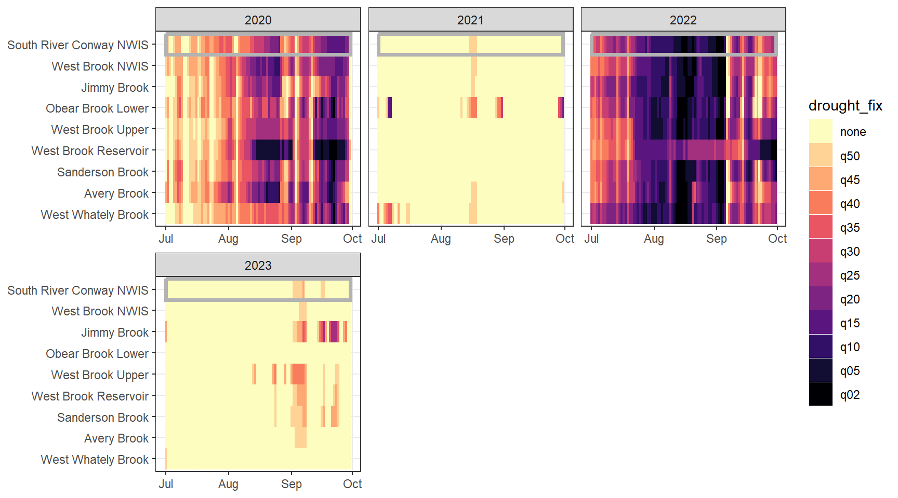
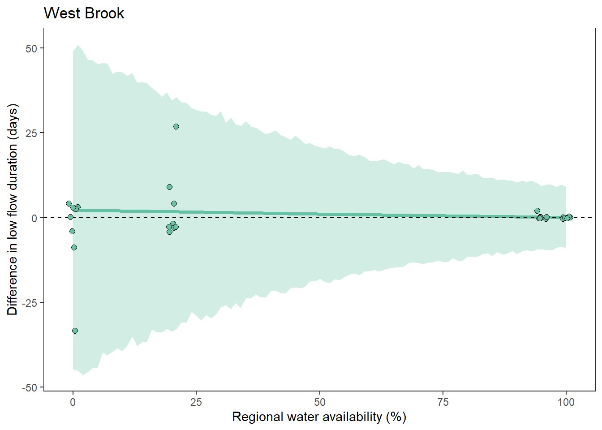

Code
siteinfo <- read_csv("C:/Users/jbaldock/OneDrive - DOI/Documents/USGS/EcoDrought/EcoDrought Working/Data/EcoDrought_SiteInformation.csv")
siteinfo_sp <- st_as_sf(siteinfo, coords = c("long", "lat"), crs = 4326)Purpose: Evaluate spatiotemporal variation in drought-related low flow conditions across headwater stream networks.
Site information
siteinfo <- read_csv("C:/Users/jbaldock/OneDrive - DOI/Documents/USGS/EcoDrought/EcoDrought Working/Data/EcoDrought_SiteInformation.csv")
siteinfo_sp <- st_as_sf(siteinfo, coords = c("long", "lat"), crs = 4326)Little g’s
dat_clean <- read_csv("C:/Users/jbaldock/OneDrive - DOI/Documents/USGS/EcoDrought/EcoDrought Working/EcoDrought-Analysis/Qualitative/LittleG_data_clean.csv")Big G’s
dat_clean_big <- read_csv("C:/Users/jbaldock/OneDrive - DOI/Documents/USGS/EcoDrought/EcoDrought Working/EcoDrought-Analysis/Qualitative/BigG_data_clean.csv")Climate
climdf <- read_csv("C:/Users/jbaldock/OneDrive - DOI/Documents/USGS/EcoDrought/EcoDrought Working/EcoDrought-Analysis/Qualitative/Daymet_climate.csv")
climdf_summ <- read_csv("C:/Users/jbaldock/OneDrive - DOI/Documents/USGS/EcoDrought/EcoDrought Working/EcoDrought-Analysis/Qualitative/Daymet_climate_summary.csv")Water availability
# wateravail <- read_csv("C:/Users/jbaldock/OneDrive - DOI/Documents/USGS/EcoDrought/EcoDrought Working/EcoDrought-Analysis/Qualitative/BigG_wateravailability_annual.csv")
wateravail <- read_csv("C:/Users/jbaldock/OneDrive - DOI/Documents/USGS/EcoDrought/EcoDrought Working/EcoDrought-Analysis/Qualitative/BigG_wateravailability_annual.csv") %>%
filter(!is.na(totalyield), !is.na(totalyield_sum)) %>%
group_by(site_name) %>%
mutate(tyz_perc = percentile(totalyield_z),
tyz_sum_perc = percentile(totalyield_sum_z)) %>%
mutate(tyz_perc = ifelse(is.na(tyz_perc), 0, tyz_perc),
tyz_sum_perc = ifelse(is.na(tyz_sum_perc), 0, tyz_sum_perc)) %>%
ungroup()
wateravail2 <- wateravail %>%
mutate(basin = ifelse(basin == "Shields River", "Yellowstone River",
ifelse(basin == "Flathead", "Flathead River",
ifelse(basin == "Donner Blitzen", "Donner-Blitzen River", basin)))) %>%
mutate(basin = factor(basin, levels = c("West Brook", "Piney River", "Staunton River", "Paine Run", "Flathead River", "Yellowstone River", "Snake River", "Donner-Blitzen River")))# get range of years for little g data
daterange <- dat_clean %>% group_by(basin) %>% summarize(minyear = year(min(date)), maxyear = year(max(date)))
# spread ecod years
mylist <- vector("list", length = dim(daterange)[1])
for (i in 1:dim(daterange)[1]) {
mylist[[i]] <- tibble(basin = daterange$basin[i], WaterYear = seq(from = daterange$minyear[i], to = daterange$maxyear[i], by = 1))
}
yrdf <- do.call(rbind, mylist) %>% mutate(ecodyr = "yes")For colors, order sites from downstream to upstream (roughly) and by subbasin (if appropriate)
wborder <- c("West Brook NWIS", "West Brook Lower", "Mitchell Brook", "Jimmy Brook", "Obear Brook Lower", "West Brook Upper", "West Brook Reservoir", "Sanderson Brook", "Avery Brook", "West Whately Brook")
paineorder <- c("Paine Run 10", "Paine Run 08", "Paine Run 07", "Paine Run 06", "Paine Run 02", "Paine Run 01")
stauntorder <- c("Staunton River 10", "Staunton River 09", "Staunton River 07", "Staunton River 06", "Staunton River 03", "Staunton River 02")
flatorder <- c("BigCreekLower", "LangfordCreekLower", "LangfordCreekUpper", "Big Creek NWIS", "BigCreekUpper", "HallowattCreekLower", "NicolaCreek", "WernerCreek", "Hallowat Creek NWIS", "CoalCreekLower", "CycloneCreekLower", "CycloneCreekMiddle", "CycloneCreekUpper", "CoalCreekMiddle", "CoalCreekNorth", "CoalCreekHeadwaters", "McGeeCreekLower", "McGeeCreekTrib", "McGeeCreekUpper")
yellorder <- c("Shields River Valley Ranch", "Deep Creek", "Crandall Creek", "Buck Creek", "Dugout Creek", "Shields River ab Dugout", "Lodgepole Creek", "EF Duck Creek be HF", "EF Duck Creek ab HF", "Henrys Fork")
snakeorder <- c("Spread Creek Dam", "Rock Creek", "NF Spread Creek Lower", "NF Spread Creek Upper", "Grizzly Creek", "SF Spread Creek Lower", "Grouse Creek", "SF Spread Creek Upper", "Leidy Creek Mouth")
donnerorder <- c("Fish Creek NWIS", "Donner Blitzen ab Fish NWIS", "Donner Blitzen nr Burnt Car NWIS", "Donner Blitzen ab Indian NWIS")Set drought levels
mydroughtlevels <- c("none", "q50", "q45", "q40", "q35", "q30", "q25", "q20", "q15", "q10", "q05", "q02")Drought/low flow delineation is somewhat complicated by the fact that some streams simply have greater yield than others. For example, using low flow thresholds derived from the reference gage and applied to headwater gages will never detect low flow conditions at groundwater-dominated sites, but this doesn’t mean that flow at that site isn’t lower than normal (for that site). This is most obvious in the Snake River basin, where NF Spread Creek Upper never experiences drought (because this is presumably a gaining reach) and Rock and Grouse Creeks are in a perpetual state of drought (presumable these are losing reaches). This is a classic “At which level of organization do I standardize my data?” question: are general differences in flow volume among sites signal or noise? But perhaps more importantly, this is a question of “what is drought?” Is drought relative to some larger regional metric (e.g., big G)? Or is it a local phenomenon, where the specifics of individual streams and reaches matter.
For each site individually, generate (fixed) drought/low flow thresholds using the same quantiles same as above: ~0.05 increments from 0.02 to 0.50. Restrict data to selected basins, sites, and years with (nearly) complete summer (July, August, September) data over the selected periods/locations. (Standardization needs to be done over comparable time periods, at least among sites within basins).
Require 95% data availability across all water years for site to be included!
Organize data, get site-level low flow threshold values, and denote drought periods
# Require 95% data availability!
monthss <- c(7:9)
# grab data and bind, z-score Yield
dat_clean_sub <- bind_rows(
dat_clean %>% filter(basin == "West Brook", WaterYear %in% c(2020:2023), Month %in% monthss, !site_name %in% c("Mitchell Brook", "West Brook Lower")) %>%
bind_rows(dat_clean_big %>% filter(basin == "West Brook", WaterYear %in% c(2020:2023), Month %in% monthss)),
dat_clean %>% filter(basin == "Staunton River", WaterYear %in% c(2019:2022), Month %in% monthss) %>%
bind_rows(dat_clean_big %>% filter(basin == "Staunton River", WaterYear %in% c(2019:2022), Month %in% monthss)),
dat_clean %>% filter(basin == "Flathead", WaterYear %in% c(2019:2021), Month %in% monthss, !site_name %in% c("BigCreekLower", "LangfordCreekUpper", "WernerCreek", "CycloneCreekMiddle", "CoalCreekMiddle", "McGeeCreekUpper")) %>%
bind_rows(dat_clean_big %>% filter(basin == "Flathead", WaterYear %in% c(2019:2021), Month %in% monthss)),
# dat_clean %>% filter(subbasin == "Big Creek", WaterYear %in% c(2019:2021), Month %in% monthss, !site_name %in% c("BigCreekLower", "LangfordCreekUpper", "NicolaCreek", "WernerCreek")) %>%
# bind_rows(dat_clean_big %>% filter(basin == "Flathead", WaterYear %in% c(2019:2021), Month %in% monthss) %>% mutate(subbasin = "Big Creek")),
#
# dat_clean %>% filter(subbasin == "Coal Creek", WaterYear %in% c(2019:2021), Month %in% monthss, !site_name %in% c("CycloneCreekMiddle", "CoalCreekMiddle", "CoalCreekHeadwaters")) %>%
# bind_rows(dat_clean_big %>% filter(basin == "Flathead", WaterYear %in% c(2019:2021), Month %in% monthss) %>% mutate(subbasin = "Coal Creek")),
dat_clean %>% filter(basin == "Snake River", WaterYear %in% c(2020:2022), Month %in% monthss, !site_name %in% c("Spread Creek Dam")) %>%
bind_rows(dat_clean_big %>% filter(basin == "Snake River", WaterYear %in% c(2020:2022), Month %in% monthss)),
dat_clean %>% filter(basin == "Shields River", WaterYear %in% c(2017, 2019, 2020, 2022), Month %in% monthss, !site_name %in% c("Shields River Valley Ranch", "Buck Creek", "Lodgepole Creek")) %>% group_by(site_name) %>%
bind_rows(dat_clean_big %>% filter(basin == "Shields River", WaterYear %in% c(2017, 2019, 2020, 2022), Month %in% monthss)),
# dat_clean %>% filter(subbasin == "Shields River", WaterYear %in% c(2019, 2020, 2023), Month %in% monthss, !site_name %in% c("Shields River Valley Ranch")) %>% group_by(site_name) %>%
# bind_rows(dat_clean_big %>% filter(basin == "Shields River", WaterYear %in% c(2019, 2020, 2023), Month %in% monthss)),
#
# dat_clean %>% filter(subbasin == "Duck Creek", WaterYear %in% c(2017:2022), Month %in% monthss) %>%
# bind_rows(dat_clean_big %>% filter(basin == "Shields River", WaterYear %in% c(2017:2022), Month %in% monthss) %>% mutate(subbasin = "Duck Creek")),
dat_clean %>% filter(basin == "Donner Blitzen", WaterYear %in% c(2019:2022), Month %in% monthss) %>%
bind_rows(dat_clean_big %>% filter(basin == "Donner Blitzen", WaterYear %in% c(2019:2022), Month %in% monthss))
) %>%
group_by(site_name) %>%
mutate(z_Yield_mm = scale(Yield_mm, center = TRUE, scale = TRUE)[,1]) %>%
ungroup()
# get low flow thresholds
dat_clean_sub_thresh <- dat_clean_sub %>%
group_by(site_name) %>%
summarize(thresh_50_fix = quantile(z_Yield_mm, probs = 0.50, na.rm = TRUE),
thresh_45_fix = quantile(z_Yield_mm, probs = 0.45, na.rm = TRUE),
thresh_40_fix = quantile(z_Yield_mm, probs = 0.40, na.rm = TRUE),
thresh_35_fix = quantile(z_Yield_mm, probs = 0.35, na.rm = TRUE),
thresh_30_fix = quantile(z_Yield_mm, probs = 0.30, na.rm = TRUE),
thresh_25_fix = quantile(z_Yield_mm, probs = 0.25, na.rm = TRUE),
thresh_20_fix = quantile(z_Yield_mm, probs = 0.20, na.rm = TRUE),
thresh_15_fix = quantile(z_Yield_mm, probs = 0.15, na.rm = TRUE),
thresh_10_fix = quantile(z_Yield_mm, probs = 0.10, na.rm = TRUE),
thresh_05_fix = quantile(z_Yield_mm, probs = 0.05, na.rm = TRUE),
thresh_02_fix = quantile(z_Yield_mm, probs = 0.02, na.rm = TRUE)) %>%
ungroup()
dat_clean_sub_thresh# A tibble: 52 × 12
site_name thresh_50_fix thresh_45_fix thresh_40_fix thresh_35_fix
<chr> <dbl> <dbl> <dbl> <dbl>
1 Avery Brook -0.263 -0.308 -0.336 -0.348
2 Big Creek NWIS -0.380 -0.421 -0.474 -0.532
3 BigCreekUpper -0.435 -0.488 -0.532 -0.576
4 CoalCreekHeadwaters -0.345 -0.359 -0.368 -0.379
5 CoalCreekLower -0.378 -0.443 -0.507 -0.553
6 CoalCreekNorth -0.349 -0.429 -0.488 -0.548
7 Crandall Creek -0.347 -0.465 -0.526 -0.588
8 CycloneCreekLower -0.225 -0.313 -0.405 -0.457
9 CycloneCreekUpper -0.504 -0.555 -0.596 -0.617
10 Deep Creek -0.340 -0.396 -0.441 -0.488
# ℹ 42 more rows
# ℹ 7 more variables: thresh_30_fix <dbl>, thresh_25_fix <dbl>,
# thresh_20_fix <dbl>, thresh_15_fix <dbl>, thresh_10_fix <dbl>,
# thresh_05_fix <dbl>, thresh_02_fix <dbl># join thresholds to data and denote drought periods
dat_clean_sub <- dat_clean_sub %>%
left_join(dat_clean_sub_thresh) %>%
mutate(month = month(date),
year = year(date),
drought_fix = ifelse(z_Yield_mm <= thresh_50_fix & z_Yield_mm > thresh_45_fix, "q50",
ifelse(z_Yield_mm <= thresh_45_fix & z_Yield_mm > thresh_40_fix, "q45",
ifelse(z_Yield_mm <= thresh_40_fix & z_Yield_mm > thresh_35_fix, "q40",
ifelse(z_Yield_mm <= thresh_35_fix & z_Yield_mm > thresh_30_fix, "q35",
ifelse(z_Yield_mm <= thresh_30_fix & z_Yield_mm > thresh_25_fix, "q30",
ifelse(z_Yield_mm <= thresh_25_fix & z_Yield_mm > thresh_20_fix, "q25",
ifelse(z_Yield_mm <= thresh_20_fix & z_Yield_mm > thresh_15_fix, "q20",
ifelse(z_Yield_mm <= thresh_15_fix & z_Yield_mm > thresh_10_fix, "q15",
ifelse(z_Yield_mm <= thresh_10_fix & z_Yield_mm > thresh_05_fix, "q10",
ifelse(z_Yield_mm <= thresh_05_fix & z_Yield_mm > thresh_02_fix, "q05",
ifelse(z_Yield_mm <= thresh_02_fix, "q02", "none")))))))))))) %>%
mutate(drought_fix = factor(ifelse(is.na(Yield_mm), NA, drought_fix), levels = mydroughtlevels))
dat_clean_sub# A tibble: 16,731 × 31
site_name basin subbasin region date flow_mean tempc_mean Yield_mm
<chr> <chr> <chr> <chr> <date> <dbl> <dbl> <dbl>
1 Avery Brook West Br… West Br… Mass 2020-07-01 1.34 16.0 0.446
2 Avery Brook West Br… West Br… Mass 2020-07-02 0.963 16.1 0.321
3 Avery Brook West Br… West Br… Mass 2020-07-03 2.40 17.3 0.800
4 Avery Brook West Br… West Br… Mass 2020-07-04 3.31 17.4 1.10
5 Avery Brook West Br… West Br… Mass 2020-07-05 1.38 17.5 0.460
6 Avery Brook West Br… West Br… Mass 2020-07-06 0.965 17.5 0.322
7 Avery Brook West Br… West Br… Mass 2020-07-07 0.778 17.3 0.259
8 Avery Brook West Br… West Br… Mass 2020-07-08 0.795 17.3 0.265
9 Avery Brook West Br… West Br… Mass 2020-07-09 1.07 17.9 0.356
10 Avery Brook West Br… West Br… Mass 2020-07-10 14.3 19.4 4.76
# ℹ 16,721 more rows
# ℹ 23 more variables: CalendarYear <dbl>, Month <dbl>, MonthName <chr>,
# WaterYear <dbl>, DayofYear <dbl>, logYield <dbl>, designation <chr>,
# doy_calendar <dbl>, z_Yield_mm <dbl>, thresh_50_fix <dbl>,
# thresh_45_fix <dbl>, thresh_40_fix <dbl>, thresh_35_fix <dbl>,
# thresh_30_fix <dbl>, thresh_25_fix <dbl>, thresh_20_fix <dbl>,
# thresh_15_fix <dbl>, thresh_10_fix <dbl>, thresh_05_fix <dbl>, …Create heatmap plotting function
# site-level drought threshold
heatmapfun_site <- function(bas, months, bigG, orderr) {
dd <- dat_clean_sub %>% filter(basin == bas)
mysites <- c(unique(unlist(dd %>% filter(site_name != bigG) %>% select(site_name))), bigG)
myrect <- dd %>% group_by(WaterYear) %>% summarize(mindate = min(date), maxdate = max(date)) %>% ungroup()
p <- dd %>%
ggplot() +
geom_tile(aes(x = date, y = factor(site_name, levels = c(rev(orderr), bigG)), fill = drought_fix)) +
scale_fill_viridis(option = "A", direction = -1, discrete = TRUE, limits = mydroughtlevels) +
geom_rect(data = myrect, aes(xmin = mindate, xmax = maxdate, ymin = length(mysites)-0.5, ymax = length(mysites)+0.5),
color = "grey70", fill = NA, size = 1.25) +
xlab("Date") + ylab("Site") +
#facet_wrap(~WaterYear, scales = "free_x") +
facet_wrap2(~WaterYear, scales = "free_x", nrow = 2, ncol = 3, trim_blank = FALSE) +
theme_bw() + theme(axis.title = element_blank())
return(p)
}heatmapfun_site(bas = "West Brook", bigG = "South River Conway NWIS", months = c(7:9), orderr = wborder)
heatmapfun_site(bas = "Staunton River", bigG = "Rapidan River NWIS", months = c(7:9), orderr = stauntorder)
heatmapfun_site(bas = "Flathead", bigG = "North Fork Flathead River NWIS", months = c(7:9), orderr = flatorder)
heatmapfun_site(bas = "Snake River", bigG = "Pacific Creek at Moran NWIS", months = c(7:9), order = snakeorder)
heatmapfun_site(bas = "Shields River", bigG = "Yellowstone River Livingston NWIS", months = c(7:9), orderr = yellorder)
heatmapfun_site(bas = "Donner Blitzen", bigG = "Donner Blitzen River nr Frenchglen NWIS", months = c(7:9), orderr = donnerorder)
Calculate low flow deficit and duration from site-specific low flow delineation.
Organize data
dat_clean_sub_deficit <- dat_clean_sub %>%
mutate(deficit_50_fix = ifelse(z_Yield_mm < thresh_50_fix, abs(thresh_50_fix - z_Yield_mm), 0),
deficit_45_fix = ifelse(z_Yield_mm < thresh_45_fix, abs(thresh_45_fix - z_Yield_mm), 0),
deficit_40_fix = ifelse(z_Yield_mm < thresh_40_fix, abs(thresh_40_fix - z_Yield_mm), 0),
deficit_35_fix = ifelse(z_Yield_mm < thresh_35_fix, abs(thresh_35_fix - z_Yield_mm), 0),
deficit_30_fix = ifelse(z_Yield_mm < thresh_30_fix, abs(thresh_30_fix - z_Yield_mm), 0),
deficit_25_fix = ifelse(z_Yield_mm < thresh_25_fix, abs(thresh_25_fix - z_Yield_mm), 0),
deficit_20_fix = ifelse(z_Yield_mm < thresh_20_fix, abs(thresh_20_fix - z_Yield_mm), 0),
deficit_15_fix = ifelse(z_Yield_mm < thresh_15_fix, abs(thresh_15_fix - z_Yield_mm), 0),
deficit_10_fix = ifelse(z_Yield_mm < thresh_10_fix, abs(thresh_10_fix - z_Yield_mm), 0),
deficit_05_fix = ifelse(z_Yield_mm < thresh_05_fix, abs(thresh_05_fix - z_Yield_mm), 0),
deficit_02_fix = ifelse(z_Yield_mm < thresh_02_fix, abs(thresh_02_fix - z_Yield_mm), 0))
# summarize by summer
defdur_ssn_sub <- dat_clean_sub_deficit %>%
filter(!is.na(Yield_mm), Month %in% c(7:9)) %>%
group_by(site_name, basin, subbasin, region, designation, CalendarYear, WaterYear) %>%
summarize(ndays = n(),
propdays = ndays/(31+31+30),
duration_50_fix = sum(deficit_50_fix > 0),
duration_45_fix = sum(deficit_45_fix > 0),
duration_40_fix = sum(deficit_40_fix > 0),
duration_35_fix = sum(deficit_35_fix > 0),
duration_30_fix = sum(deficit_30_fix > 0),
duration_25_fix = sum(deficit_25_fix > 0),
duration_20_fix = sum(deficit_20_fix > 0),
duration_15_fix = sum(deficit_15_fix > 0),
duration_10_fix = sum(deficit_10_fix > 0),
duration_05_fix = sum(deficit_05_fix > 0),
duration_02_fix = sum(deficit_02_fix > 0),
duration_50_fix_prop = sum(deficit_50_fix > 0) / ndays,
duration_45_fix_prop = sum(deficit_45_fix > 0) / ndays,
duration_40_fix_prop = sum(deficit_40_fix > 0) / ndays,
duration_35_fix_prop = sum(deficit_35_fix > 0) / ndays,
duration_30_fix_prop = sum(deficit_30_fix > 0) / ndays,
duration_25_fix_prop = sum(deficit_25_fix > 0) / ndays,
duration_20_fix_prop = sum(deficit_20_fix > 0) / ndays,
duration_15_fix_prop = sum(deficit_15_fix > 0) / ndays,
duration_10_fix_prop = sum(deficit_10_fix > 0) / ndays,
duration_05_fix_prop = sum(deficit_05_fix > 0) / ndays,
duration_02_fix_prop = sum(deficit_02_fix > 0) / ndays,
deficit_50_fix = sum(deficit_50_fix),
deficit_45_fix = sum(deficit_45_fix),
deficit_40_fix = sum(deficit_40_fix),
deficit_35_fix = sum(deficit_35_fix),
deficit_30_fix = sum(deficit_30_fix),
deficit_25_fix = sum(deficit_25_fix),
deficit_20_fix = sum(deficit_20_fix),
deficit_15_fix = sum(deficit_15_fix),
deficit_10_fix = sum(deficit_10_fix),
deficit_05_fix = sum(deficit_05_fix),
deficit_02_fix = sum(deficit_02_fix)) %>%
ungroup() %>%
mutate(designation = ifelse(is.na(designation), "big", designation)) %>%
filter(propdays >= 0.70) %>%
left_join(wateravail %>% select(basin, WaterYear, totalyield, totalyield_z))
# keep raw days for binomial model
defdur_ssn_sub2 <- dat_clean_sub_deficit %>%
filter(!is.na(Yield_mm), Month %in% c(7:9)) %>%
group_by(site_name, basin, subbasin, region, designation, CalendarYear, WaterYear) %>%
summarize(ndays = n(),
propdays = ndays/(31+31+30),
duration_50_fix = sum(deficit_50_fix > 0),
duration_45_fix = sum(deficit_45_fix > 0),
duration_40_fix = sum(deficit_40_fix > 0),
duration_35_fix = sum(deficit_35_fix > 0),
duration_30_fix = sum(deficit_30_fix > 0),
duration_25_fix = sum(deficit_25_fix > 0),
duration_20_fix = sum(deficit_20_fix > 0),
duration_15_fix = sum(deficit_15_fix > 0),
duration_10_fix = sum(deficit_10_fix > 0),
duration_05_fix = sum(deficit_05_fix > 0),
duration_02_fix = sum(deficit_02_fix > 0),
deficit_50_fix = sum(deficit_50_fix),
deficit_45_fix = sum(deficit_45_fix),
deficit_40_fix = sum(deficit_40_fix),
deficit_35_fix = sum(deficit_35_fix),
deficit_30_fix = sum(deficit_30_fix),
deficit_25_fix = sum(deficit_25_fix),
deficit_20_fix = sum(deficit_20_fix),
deficit_15_fix = sum(deficit_15_fix),
deficit_10_fix = sum(deficit_10_fix),
deficit_05_fix = sum(deficit_05_fix),
deficit_02_fix = sum(deficit_02_fix)) %>%
ungroup() %>%
mutate(designation = ifelse(is.na(designation), "big", designation)) %>%
filter(propdays >= 0.70) %>%
left_join(wateravail %>% select(basin, WaterYear, totalyield, totalyield_z))Create plotting functions. These are the same as defined above, but instead grab the “defdur_ssn_sub” object for site-level low flow thresholds.
durationplotfun_sub <- function(bas, bigG, months, wateryears, dropsites = NA) {
# filter and summarize data
dd <- defdur_ssn_sub %>%
filter(basin == bas | site_name == bigG, WaterYear %in% wateryears, !site_name %in% dropsites) %>%
mutate(WaterYear = factor(WaterYear, levels = wateryears))
# order sites, Big G first
mysites <- c(unique(unlist(dd %>% filter(designation == "big") %>% select(site_name))),
unique(unlist(dd %>% filter(designation == "little") %>% select(site_name))))
# among site StDev ~ percentile
p_sds <- dd %>%
gather(duration_50_fix_prop:duration_02_fix_prop, key = "metric", value = "duration") %>%
mutate(quant = as.numeric(gsub(".*?([0-9]+).*", "\\1", metric)) ) %>%
filter(designation == "little") %>%
group_by(WaterYear, totalyield_z, metric, quant) %>%
summarize(sddur = sd(duration, na.rm = TRUE)) %>%
ungroup() %>%
#left_join(dd %>% filter(site_name == bigG) %>% select(WaterYear, duration_25_fix_prop) %>% rename(dur25 = duration_25_fix_prop)) %>%
left_join(wateravail %>% filter(site_name == bigG) %>% select(WaterYear, tyz_sum_perc) %>% mutate(WaterYear = as.factor(WaterYear))) %>%
ggplot(aes(x = quant, y = sddur, color = tyz_sum_perc, group = WaterYear, shape = WaterYear)) +
stat_smooth() +
geom_point() +
scale_color_gradient(low = "red", high = "blue", limits = c(0,100)) +
xlab("Low flow threshold (percentile)") + ylab("Among-site SD(duration)") +
theme_bw() +
theme(panel.grid.major = element_blank(), panel.grid.minor = element_blank(),
legend.position = "bottom", legend.direction = "vertical", legend.key.height = unit(0.3, 'cm'))
# barplot 50th perc
p30 <- dd %>%
ggplot(aes(x = factor(site_name, levels = (mysites)), y = duration_50_fix_prop)) +
geom_bar(aes(fill = designation), stat = "identity") +
scale_fill_manual(values = c("grey20", "grey55")) +
facet_wrap2(~WaterYear, ncol = 1, strip = strip_themed(background_x = elem_list_rect(fill = alpha(unique(layer_data(p_sds)[,1]), 0.5)))) +
ylim(0,1) +
ylab("Days below low flow threshold (%JAS)") + ggtitle("50th perc.") +
theme_bw() +
theme(axis.text.x = element_text(angle = 90, vjust = 0.5, hjust = 1),
legend.position = "none", axis.title.x = element_blank(),
panel.grid.major = element_blank(), panel.grid.minor = element_blank())
# barplot 25th perc.
p20 <- dd %>%
ggplot(aes(x = factor(site_name, levels = (mysites)), y = duration_25_fix_prop)) +
geom_bar(aes(fill = designation), stat = "identity") +
scale_fill_manual(values = c("grey20", "grey55")) +
facet_wrap2(~WaterYear, ncol = 1, strip = strip_themed(background_x = elem_list_rect(fill = alpha(unique(layer_data(p_sds)[,1]), 0.5)))) +
ylim(0,1) +
ylab("Days below low flow threshold (%JAS)") + ggtitle("25th perc.") +
theme_bw() +
theme(axis.text.x = element_text(angle = 90, vjust = 0.5, hjust = 1),
legend.position = "none", axis.title.x = element_blank(),
panel.grid.major = element_blank(), panel.grid.minor = element_blank())
# barplot 10th perc.
p10 <- dd %>%
ggplot(aes(x = factor(site_name, levels = (mysites)), y = duration_10_fix_prop)) +
geom_bar(aes(fill = designation), stat = "identity") +
scale_fill_manual(values = c("grey20", "grey55")) +
facet_wrap2(~WaterYear, ncol = 1, strip = strip_themed(background_x = elem_list_rect(fill = alpha(unique(layer_data(p_sds)[,1]), 0.5)))) +
ylim(0,1) +
ylab("Days below low flow threshold (%JAS)") + ggtitle("10th perc.") +
theme_bw() +
theme(axis.text.x = element_text(angle = 90, vjust = 0.5, hjust = 1),
legend.position = "none", axis.title.x = element_blank(),
panel.grid.major = element_blank(), panel.grid.minor = element_blank())
# barplot 5th perc.
p05 <- dd %>%
ggplot(aes(x = factor(site_name, levels = (mysites)), y = duration_05_fix_prop)) +
geom_bar(aes(fill = designation), stat = "identity") +
scale_fill_manual(values = c("grey20", "grey55")) +
facet_wrap2(~WaterYear, ncol = 1, strip = strip_themed(background_x = elem_list_rect(fill = alpha(unique(layer_data(p_sds)[,1]), 0.5)))) +
ylim(0,1) +
ylab("Days below low flow threshold (%JAS)") + ggtitle("5th perc.") +
theme_bw() +
theme(axis.text.x = element_text(angle = 90, vjust = 0.5, hjust = 1),
legend.position = "none", axis.title.x = element_blank(),
panel.grid.major = element_blank(), panel.grid.minor = element_blank())
# barplot 2nd perc
p02 <- dd %>%
ggplot(aes(x = factor(site_name, levels = (mysites)), y = duration_02_fix_prop)) +
geom_bar(aes(fill = designation), stat = "identity") +
scale_fill_manual(values = c("grey20", "grey55")) +
facet_wrap2(~WaterYear, ncol = 1, strip = strip_themed(background_x = elem_list_rect(fill = alpha(unique(layer_data(p_sds)[,1]), 0.5)))) +
ylim(0,1) +
ylab("Days below low flow threshold (%JAS)") + ggtitle("2nd perc.") +
theme_bw() +
theme(axis.text.x = element_text(angle = 90, vjust = 0.5, hjust = 1),
legend.position = "none", axis.title.x = element_blank(),
panel.grid.major = element_blank(), panel.grid.minor = element_blank())
# arrange plots
egg::ggarrange(p02 + theme(plot.margin = margin(r = 1, t = 5, b = 5)),
p05 + theme(axis.text.y = element_blank(), axis.title.y = element_blank(), plot.margin = margin(r = 1, l = 1)),
p10 + theme(axis.text.y = element_blank(), axis.title.y = element_blank(), plot.margin = margin(r = 1, l = 1)),
p20 + theme(axis.text.y = element_blank(), axis.title.y = element_blank(), plot.margin = margin(r = 1, l = 1)),
p30 + theme(axis.text.y = element_blank(), axis.title.y = element_blank(), plot.margin = margin(r = 1, l = 1)),
p_sds,
nrow = 1, widths = c(1,1,1,1,1,2.5))
}
deficitplotfun_sub <- function(bas, bigG, months, wateryears, dropsites = NA) {
# filter and summarize data
dd_all <- defdur_ssn_sub %>% filter(basin == bas | site_name == bigG, WaterYear %in% wateryears, !site_name %in% dropsites)
dd <- defdur_ssn_sub %>%
filter(basin == bas | site_name == bigG, WaterYear %in% wateryears, !site_name %in% dropsites) %>%
mutate(WaterYear = factor(WaterYear, levels = wateryears))
# get y-axis limit
ymax <- max(dd %>% select(deficit_50_fix:deficit_02_fix))
# order sites, Big G first
mysites <- c(unique(unlist(dd %>% filter(designation == "big") %>% select(site_name))),
unique(unlist(dd %>% filter(designation == "little") %>% select(site_name))))
# among site StDev ~ percentile
p_sds <- dd %>%
gather(deficit_50_fix:deficit_02_fix, key = "metric", value = "deficit") %>%
mutate(quant = as.numeric(gsub(".*?([0-9]+).*", "\\1", metric)) ) %>%
filter(designation == "little") %>%
group_by(WaterYear, totalyield_z, metric, quant) %>%
summarize(sddur = sd(deficit, na.rm = TRUE)) %>%
ungroup() %>%
#left_join(dd %>% filter(site_name == bigG) %>% select(WaterYear, deficit_25_fix) %>% rename(def25 = deficit_25_fix)) %>%
left_join(wateravail %>% filter(site_name == bigG) %>% select(WaterYear, tyz_sum_perc) %>% mutate(WaterYear = as.factor(WaterYear))) %>%
ggplot(aes(x = quant, y = sddur, color = tyz_sum_perc, group = WaterYear, shape = WaterYear)) +
stat_smooth() +
geom_point() +
scale_color_gradient(low = "red", high = "blue", limits = c(0,100)) +
xlab("Low flow threshold (percentile)") + ylab("Among-site SD(deficit)") +
theme_bw() +
theme(panel.grid.major = element_blank(), panel.grid.minor = element_blank(),
legend.position = "bottom", legend.direction = "vertical", legend.key.height = unit(0.3, 'cm'))
# barplot 50th perc
p30 <- dd %>%
ggplot(aes(x = factor(site_name, levels = (mysites)), y = deficit_50_fix)) +
geom_bar(aes(fill = designation), stat = "identity") +
scale_fill_manual(values = c("grey20", "grey55")) +
facet_wrap2(~WaterYear, ncol = 1, strip = strip_themed(background_x = elem_list_rect(fill = alpha(unique(layer_data(p_sds)[,1]), 0.5)))) +
ylim(0,ymax) +
ylab("Drought deficit (mm, JAS)") + ggtitle("50th perc.") +
theme_bw() +
theme(axis.text.x = element_text(angle = 90, vjust = 0.5, hjust = 1),
legend.position = "none", axis.title.x = element_blank(),
panel.grid.major = element_blank(), panel.grid.minor = element_blank())
# barplot 25th perc.
p20 <- dd %>%
ggplot(aes(x = factor(site_name, levels = (mysites)), y = deficit_25_fix)) +
geom_bar(aes(fill = designation), stat = "identity") +
scale_fill_manual(values = c("grey20", "grey55")) +
facet_wrap2(~WaterYear, ncol = 1, strip = strip_themed(background_x = elem_list_rect(fill = alpha(unique(layer_data(p_sds)[,1]), 0.5)))) +
ylim(0,ymax) +
ylab("Drought deficit (mm, JAS)") + ggtitle("25th perc.") +
theme_bw() +
theme(axis.text.x = element_text(angle = 90, vjust = 0.5, hjust = 1),
legend.position = "none", axis.title.x = element_blank(),
panel.grid.major = element_blank(), panel.grid.minor = element_blank())
# barplot 10th perc.
p10 <- dd %>%
ggplot(aes(x = factor(site_name, levels = (mysites)), y = deficit_10_fix)) +
geom_bar(aes(fill = designation), stat = "identity") +
scale_fill_manual(values = c("grey20", "grey55")) +
facet_wrap2(~WaterYear, ncol = 1, strip = strip_themed(background_x = elem_list_rect(fill = alpha(unique(layer_data(p_sds)[,1]), 0.5)))) +
ylim(0,ymax) +
ylab("Drought deficit (mm, JAS)") + ggtitle("10th perc.") +
theme_bw() +
theme(axis.text.x = element_text(angle = 90, vjust = 0.5, hjust = 1),
legend.position = "none", axis.title.x = element_blank(),
panel.grid.major = element_blank(), panel.grid.minor = element_blank())
# barplot 5th perc.
p05 <- dd %>%
ggplot(aes(x = factor(site_name, levels = (mysites)), y = deficit_05_fix)) +
geom_bar(aes(fill = designation), stat = "identity") +
scale_fill_manual(values = c("grey20", "grey55")) +
facet_wrap2(~WaterYear, ncol = 1, strip = strip_themed(background_x = elem_list_rect(fill = alpha(unique(layer_data(p_sds)[,1]), 0.5)))) +
ylim(0,ymax) +
ylab("Drought deficit (mm, JAS)") + ggtitle("5th perc.") +
theme_bw() +
theme(axis.text.x = element_text(angle = 90, vjust = 0.5, hjust = 1),
legend.position = "none", axis.title.x = element_blank(),
panel.grid.major = element_blank(), panel.grid.minor = element_blank())
# barplot 2nd perc
p02 <- dd %>%
ggplot(aes(x = factor(site_name, levels = (mysites)), y = deficit_02_fix)) +
geom_bar(aes(fill = designation), stat = "identity") +
scale_fill_manual(values = c("grey20", "grey55")) +
facet_wrap2(~WaterYear, ncol = 1, strip = strip_themed(background_x = elem_list_rect(fill = alpha(unique(layer_data(p_sds)[,1]), 0.5)))) +
ylim(0,ymax) +
ylab("Drought deficit (JAS)") + ggtitle("2nd perc.") +
theme_bw() +
theme(axis.text.x = element_text(angle = 90, vjust = 0.5, hjust = 1),
legend.position = "none", axis.title.x = element_blank(),
panel.grid.major = element_blank(), panel.grid.minor = element_blank())
# arrange plots
egg::ggarrange(p02 + theme(plot.margin = margin(r = 1, t = 5, b = 5)),
p05 + theme(axis.text.y = element_blank(), axis.title.y = element_blank(), plot.margin = margin(r = 1, l = 1)),
p10 + theme(axis.text.y = element_blank(), axis.title.y = element_blank(), plot.margin = margin(r = 1, l = 1)),
p20 + theme(axis.text.y = element_blank(), axis.title.y = element_blank(), plot.margin = margin(r = 1, l = 1)),
p30 + theme(axis.text.y = element_blank(), axis.title.y = element_blank(), plot.margin = margin(r = 1, l = 1)),
p_sds,
nrow = 1, widths = c(1,1,1,1,1,2.5))
}Show proportion of days (July - September) below different low flow thresholds (derived from temporally restricted, site-specific data) for each site during a relatively wet year and a dry year. Then, for each year, plot the relationship between the among site (little g’s only) standard deviation of low flow duration and the low flow threshold used to calculate duration
durationplotfun_sub(bas = "West Brook", bigG = "South River Conway NWIS", months = c(7:9), wateryears = c(2022, 2020, 2021, 2023))durationplotfun_sub(bas = "Staunton River", bigG = "Rapidan River NWIS", months = c(7:9), wateryears = c(2019, 2022, 2021, 2020))
durationplotfun_sub(bas = "Flathead", bigG = "North Fork Flathead River NWIS", months = c(7:9), wateryears = c(2019, 2021, 2020))
durationplotfun_sub(bas = "Snake River", bigG = "Pacific Creek at Moran NWIS", months = c(7:9), wateryears = c(2021, 2020, 2022))
durationplotfun_sub(bas = "Shields River", bigG = "Yellowstone River Livingston NWIS", months = c(7:9), wateryears = c(2020, 2019, 2023, 2017), dropsites = c("Shields River Valley Ranch", "Buck Creek", "Lodgepole Creek"))
durationplotfun_sub(bas = "Donner Blitzen", bigG = "Donner Blitzen River nr Frenchglen NWIS", months = c(7:9), wateryears = c(2021,2020,2022, 2019))Show total drought deficit (mm) relative to different low flow thresholds (derived from long-term Big G data) for each site during a relatively wet year and a dry year. Then, for each year, plot the relationship between the among site (little g’s only) standard deviation of deficit and the low flow threshold used to calculate deficit
deficitplotfun_sub(bas = "West Brook", bigG = "South River Conway NWIS", months = c(7:9), wateryears = c(2022, 2020, 2021, 2023))
deficitplotfun_sub(bas = "Staunton River", bigG = "Rapidan River NWIS", months = c(7:9), wateryears = c(2019, 2022, 2021, 2020))
deficitplotfun_sub(bas = "Flathead", bigG = "North Fork Flathead River NWIS", months = c(7:9), wateryears = c(2019, 2021, 2020))
deficitplotfun_sub(bas = "Snake River", bigG = "Pacific Creek at Moran NWIS", months = c(7:9), wateryears = c(2021, 2020, 2022))
deficitplotfun_sub(bas = "Shields River", bigG = "Yellowstone River Livingston NWIS", months = c(7:9), wateryears = c(2020, 2019, 2023, 2017), dropsites = c("Shields River Valley Ranch", "Buck Creek", "Lodgepole Creek"))
deficitplotfun_sub(bas = "Donner Blitzen", bigG = "Donner Blitzen River nr Frenchglen NWIS", months = c(7:9), wateryears = c(2021,2020,2022, 2019))
What is the relationship between regional water availability (total summer flow percentile from long-term big G flow data) and spatial variation in little g drought duration and deficit?
Hypothesis: spatial variation in drought duration and deficit increases in dry years as controls on little G streamflow shift from regional to local (catchment) scales. (This follows directly from objective 1, but specifically considers low flow conditions).
Rename basins
defdur_ssn_sub2 <- defdur_ssn_sub %>%
mutate(basin = ifelse(basin == "Shields River", "Yellowstone River",
ifelse(basin == "Flathead", "Flathead River",
ifelse(basin == "Donner Blitzen", "Donner-Blitzen River", basin)))) %>%
mutate(basin = factor(basin, levels = c("West Brook", "Piney River", "Staunton River", "Paine Run",
"Flathead River", "Yellowstone River", "Snake River", "Donner-Blitzen River")))
p1 <- defdur_ssn_sub %>%
filter(designation == "little") %>%
group_by(basin, WaterYear) %>%
summarize(sddur = sd(deficit_02_fix)) %>%
ungroup() %>%
left_join(wateravail %>% select(basin, WaterYear, totalyield:tyz_sum_perc)) %>%
ggplot(aes(x = tyz_sum_perc, y = sddur, color = basin)) +
geom_smooth(method = "lm", se = FALSE) +
geom_point(aes(color = basin)) +
#facet_wrap(~basin) +
annotate("text", label = "2nd perc.", x = Inf, y = Inf, hjust = 1, vjust = 1) +
theme_bw() + theme(panel.grid = element_blank(), axis.title = element_blank(), axis.text.x = element_blank(), legend.position = "none") +
ylim(0,6)
p2 <- defdur_ssn_sub %>%
filter(designation == "little") %>%
group_by(basin, WaterYear) %>%
summarize(sddur = sd(deficit_05_fix)) %>%
ungroup() %>%
left_join(wateravail %>% select(basin, WaterYear, totalyield:tyz_sum_perc)) %>%
ggplot(aes(x = tyz_sum_perc, y = sddur, color = basin)) +
geom_smooth(method = "lm", se = FALSE) +
geom_point(aes(color = basin)) +
#facet_wrap(~basin) +
annotate("text", label = "5th perc.", x = Inf, y = Inf, hjust = 1, vjust = 1) +
theme_bw() + theme(panel.grid = element_blank(), axis.title = element_blank(), axis.text = element_blank()) + ylim(0,6)
p3 <- defdur_ssn_sub %>%
filter(designation == "little") %>%
group_by(basin, WaterYear) %>%
summarize(sddur = sd(deficit_10_fix)) %>%
ungroup() %>%
left_join(wateravail %>% select(basin, WaterYear, totalyield:tyz_sum_perc)) %>%
ggplot(aes(x = tyz_sum_perc, y = sddur, color = basin)) +
geom_smooth(method = "lm", se = FALSE) +
geom_point(aes(color = basin)) +
#facet_wrap(~basin) +
annotate("text", label = "10th perc.", x = Inf, y = Inf, hjust = 1, vjust = 1) +
theme_bw() + theme(panel.grid = element_blank(), axis.title = element_blank(), legend.position = "none") + ylim(0,6)
p4 <- defdur_ssn_sub %>%
filter(designation == "little") %>%
group_by(basin, WaterYear) %>%
summarize(sddur = sd(deficit_20_fix)) %>%
ungroup() %>%
left_join(wateravail %>% select(basin, WaterYear, totalyield:tyz_sum_perc)) %>%
ggplot(aes(x = tyz_sum_perc, y = sddur, color = basin)) +
geom_smooth(method = "lm", se = FALSE) +
geom_point(aes(color = basin)) +
#facet_wrap(~basin) +
annotate("text", label = "20th perc.", x = Inf, y = Inf, hjust = 1, vjust = 1) +
theme_bw() + theme(panel.grid = element_blank(), axis.title = element_blank(), axis.text.y = element_blank(), legend.position = "none") + ylim(0,6)
annotate_figure(egg::ggarrange(p1, p2, p3, p4),
left = "Among-site variation in drought deficit (SD)", bottom = "Regional water availability (percentile)")
Summarize relationships across thresholds: how does the definition of “low flow”/“drought” change the way we understand the effect of regional water availability on spatial variation in low flow conditions?
colnums <- c(8:18)
effecttib <- tibble(threshold = rep(NA, times = length(colnums)),
int_est = rep(NA, times = length(colnums)),
int_se = rep(NA, times = length(colnums)),
slo_est = rep(NA, times = length(colnums)),
slo_se = rep(NA, times = length(colnums)))
for (i in 1:length(colnums)) {
effecttib$threshold[i] <- parse_number(names(defdur_ssn_sub2)[colnums[i]+2])
dd <- defdur_ssn_sub2 %>%
filter(designation == "little", ndays >= 87) %>%
group_by(basin, WaterYear) %>%
summarize(n = n()) %>%
ungroup() %>%
left_join(defdur_ssn_sub2 %>%
filter(designation == "little", ndays >= 87) %>%
group_by(basin, WaterYear) %>%
summarize_at(colnums[i], funs(min, max)) %>%
ungroup()) %>%
mutate(rangedur = max-min) %>%
left_join(wateravail2 %>% select(basin, WaterYear, tyz_sum_perc)) #%>%
#rename(sddur = 4)
mymod <- summary(lm(rangedur ~ tyz_sum_perc, data = dd, weights = n))
effecttib$int_est[i] <- mymod$coefficients[1,1]
effecttib$int_se[i] <- mymod$coefficients[1,2]
effecttib$slo_est[i] <- mymod$coefficients[2,1]
effecttib$slo_se[i] <- mymod$coefficients[2,2]
}
p1 <- effecttib %>%
ggplot(aes(x = threshold, y = int_est)) +
geom_line(color = "grey") +
geom_point() +
geom_errorbar(aes(ymin = int_est-int_se, ymax = int_est+int_se), width = 1) +
geom_abline(intercept = 0, slope = 0, linetype = "dashed") +
xlab("Low flow threshold (percentile)") + ylab("Intercept (spatial variation at\n0% regional water availability)") +
theme_classic()
p2 <- effecttib %>%
ggplot(aes(x = threshold, y = slo_est)) +
geom_line(color = "grey") +
geom_point() +
geom_errorbar(aes(ymin = slo_est-slo_se, ymax = slo_est+slo_se), width = 1) +
geom_abline(intercept = 0, slope = 0, linetype = "dashed") +
xlab("Low flow threshold (percentile)") + ylab("Slope (effect of regional water\navailability on spatial variation)") +
theme_classic()
egg::ggarrange(p1, p2, nrow = 2)
How suitable are reference gages for predicting low flow conditions in headwater stream networks?
Calculate difference in drought duration between headwaters gages and reference gage
defdur_ssn_sub2_little <- defdur_ssn_sub2 %>% filter(designation == "little")
defdur_ssn_sub2_big <- defdur_ssn_sub2 %>% filter(designation == "big") %>% select(basin, WaterYear, ndays, duration_50_fix:duration_02_fix)
names(defdur_ssn_sub2_big) <- c("basin", "WaterYear", "ndays_big", "duration_50_fix_big", "duration_45_fix_big", "duration_40_fix_big", "duration_35_fix_big", "duration_30_fix_big", "duration_25_fix_big", "duration_20_fix_big", "duration_15_fix_big", "duration_10_fix_big", "duration_05_fix_big", "duration_02_fix_big")
joineddefdur <- defdur_ssn_sub2_little %>% left_join(defdur_ssn_sub2_big) %>%
mutate(ndays_diff = ndays - ndays_big,
duration_50_fix_diff = duration_50_fix - duration_50_fix_big,
duration_45_fix_diff = duration_45_fix - duration_45_fix_big,
duration_40_fix_diff = duration_40_fix - duration_40_fix_big,
duration_35_fix_diff = duration_35_fix - duration_35_fix_big,
duration_30_fix_diff = duration_30_fix - duration_30_fix_big,
duration_25_fix_diff = duration_25_fix - duration_25_fix_big,
duration_20_fix_diff = duration_20_fix - duration_20_fix_big,
duration_15_fix_diff = duration_15_fix - duration_15_fix_big,
duration_10_fix_diff = duration_10_fix - duration_10_fix_big,
duration_05_fix_diff = duration_05_fix - duration_05_fix_big,
duration_02_fix_diff = duration_02_fix - duration_02_fix_big) %>%
left_join(wateravail2 %>% select(basin, WaterYear, totalyield:tyz_sum_perc))
joineddefdur <- joineddefdur %>% mutate(basin_num = as.numeric(basin))
joineddefdur %>% group_by(basin) %>% summarize(basin_num = unique(basin_num))# A tibble: 6 × 2
basin basin_num
<fct> <dbl>
1 West Brook 1
2 Staunton River 3
3 Flathead River 5
4 Yellowstone River 6
5 Snake River 7
6 Donner-Blitzen River 8joineddefdur %>% filter(basin == "Donner-Blitzen River")# A tibble: 16 × 73
site_name basin subbasin region designation CalendarYear WaterYear ndays
<chr> <fct> <chr> <chr> <chr> <dbl> <dbl> <int>
1 Donner Blitze… Donn… Donner … Oreg little 2019 2019 68
2 Donner Blitze… Donn… Donner … Oreg little 2020 2020 92
3 Donner Blitze… Donn… Donner … Oreg little 2021 2021 92
4 Donner Blitze… Donn… Donner … Oreg little 2022 2022 92
5 Donner Blitze… Donn… Donner … Oreg little 2019 2019 70
6 Donner Blitze… Donn… Donner … Oreg little 2020 2020 92
7 Donner Blitze… Donn… Donner … Oreg little 2021 2021 92
8 Donner Blitze… Donn… Donner … Oreg little 2022 2022 92
9 Donner Blitze… Donn… Donner … Oreg little 2019 2019 69
10 Donner Blitze… Donn… Donner … Oreg little 2020 2020 92
11 Donner Blitze… Donn… Donner … Oreg little 2021 2021 92
12 Donner Blitze… Donn… Donner … Oreg little 2022 2022 92
13 Fish Creek NW… Donn… Donner … Oreg little 2019 2019 68
14 Fish Creek NW… Donn… Donner … Oreg little 2020 2020 92
15 Fish Creek NW… Donn… Donner … Oreg little 2021 2021 92
16 Fish Creek NW… Donn… Donner … Oreg little 2022 2022 92
# ℹ 65 more variables: propdays <dbl>, duration_50_fix <int>,
# duration_45_fix <int>, duration_40_fix <int>, duration_35_fix <int>,
# duration_30_fix <int>, duration_25_fix <int>, duration_20_fix <int>,
# duration_15_fix <int>, duration_10_fix <int>, duration_05_fix <int>,
# duration_02_fix <int>, duration_50_fix_prop <dbl>,
# duration_45_fix_prop <dbl>, duration_40_fix_prop <dbl>,
# duration_35_fix_prop <dbl>, duration_30_fix_prop <dbl>, …Plot difference in drought duration by regional water availability for 4 low flow thresholds
p1 <- joineddefdur %>%
mutate(groups = paste(basin, WaterYear, sep = "_")) %>%
ggplot(aes(x = tyz_sum_perc, y = duration_10_fix_diff)) +
# geom_quantile(quantiles = c(0.05, 0.5, 0.95)) +
geom_point(aes(fill = basin), shape = 21, size = 2, position = position_jitter(seed = 1, width = 1)) +
scale_fill_manual(values = mycols) +
theme_bw() + theme(panel.grid = element_blank()) + ylim(-60,60)
p2 <- joineddefdur %>%
mutate(groups = paste(basin, WaterYear, sep = "_")) %>%
ggplot(aes(x = tyz_sum_perc, y = duration_20_fix_diff)) +
# geom_quantile(quantiles = c(0.05, 0.5, 0.95)) +
geom_point(aes(fill = basin), shape = 21, size = 2, position = position_jitter(seed = 1, width = 1)) +
scale_fill_manual(values = mycols) +
theme_bw() + theme(panel.grid = element_blank()) + ylim(-60,60)
p3 <- joineddefdur %>%
mutate(groups = paste(basin, WaterYear, sep = "_")) %>%
ggplot(aes(x = tyz_sum_perc, y = duration_30_fix_diff)) +
# geom_quantile(quantiles = c(0.05, 0.5, 0.95)) +
geom_point(aes(fill = basin), shape = 21, size = 2, position = position_jitter(seed = 1, width = 1)) +
scale_fill_manual(values = mycols) +
theme_bw() + theme(panel.grid = element_blank()) + ylim(-60,60)
p4 <- joineddefdur %>%
mutate(groups = paste(basin, WaterYear, sep = "_")) %>%
ggplot(aes(x = tyz_sum_perc, y = duration_40_fix_diff)) +
# geom_quantile(quantiles = c(0.05, 0.5, 0.95)) +
geom_point(aes(fill = basin), shape = 21, size = 2, position = position_jitter(seed = 1, width = 1)) +
scale_fill_manual(values = mycols) +
theme_bw() + theme(panel.grid = element_blank()) + ylim(-60,60)
ggarrange(p1, p2, p3, p4, nrow = 2, ncol = 2, common.legend = TRUE, legend = "right")
Specify ~simple JAGS model: linear regression between regional water availability and low flow duration, where sigma is modeled as a function of regional water availability. No random effects for network.
This is the form we used originally, pooling data across basins to estimate a common relationship. However, this is overly simplified, as it fails to account for basin-level groupings in the data
cat("model {
##--- LIKELIHOOD ---------------------------------------------------##
for (i in 1:nObs) {
D[i] ~ dnorm(mu[i], pow(sigma[i], -2))
mu[i] <- alpha + beta * W[i]
log(sigma[i]) <- sig.alpha + sig.beta * W[i]
# Log-likelihood
loglik[i] <- logdensity.norm(D[i], mu[i], pow(sigma[i], -2))
}
##--- PRIORS --------------------------------------------------------##
alpha ~ dnorm(0, pow(10, -2))
beta ~ dnorm(0, pow(10, -2))
sig.alpha ~ dnorm(0, pow(10, -2))
sig.beta ~ dnorm(0, pow(10, -2))
##--- DERIVED VALUES ------------------------------------------------##
# attenuation strength
AS <- exp(sig.alpha + sig.beta * 0) / exp(sig.alpha + sig.beta * 100)
# prediction means
for (i in 1:nPreds) { P0m[i] <- alpha + beta * Wp[i] }
# prediction intervals
for (i in 1:nPreds) { P0i[i] ~ dnorm(alpha + beta * Wp[i], pow(exp(sig.alpha + sig.beta * Wp[i]), -2)) }
# sigma means
for (i in 1:nPreds) { S0m[i] <- exp(sig.alpha + sig.beta * Wp[i]) }
}", file = "C:/Users/jbaldock/OneDrive - DOI/Documents/USGS/EcoDrought/EcoDrought Working/EcoDrought-Analysis/Qualitative/DroughtModel.txt")Fit model for each threshold, in a loop
modlist_simple <- list()
npreds <- 101
thresh <- c(50,45,40,35,30,25,20,15,10,5,2)
for (i in 1:11) {
names(joineddefdur)[57+i]
jags.data <- list("nObs" = dim(joineddefdur)[1],
"D" = unlist(joineddefdur[,57+i]),
"W" = joineddefdur$tyz_sum_perc,
"nPreds" = npreds, "Wp" = seq(from = 0, to = 100, length.out = npreds))
jags.params <- c("alpha", "beta", "sig.alpha", "sig.beta", "AS", "D", "P0m", "P0i", "S0m", "loglik")
fit <- jags(data = jags.data, parameters.to.save = jags.params,
model.file = "C:/Users/jbaldock/OneDrive - DOI/Documents/USGS/EcoDrought/EcoDrought Working/EcoDrought-Analysis/Qualitative/DroughtModel.txt",
n.chains = 3, n.thin = 10, n.burnin = 1000, n.iter = 6000, DIC = FALSE)
modlist_simple[[i]] <- fit
}Get attenuation strength (sensu Chezik et al. 2017) for each model (low flow threshold, %) and summarize as median and 95% credible interval
attenlist <- list()
sigbetalist <- list()
sigalphalist <- list()
for (i in 1:length(modlist_simple)) {
attenlist[[i]] <- modlist_simple[[i]]$BUGSoutput$sims.list$AS
sigbetalist[[i]] <- modlist_simple[[i]]$BUGSoutput$sims.list$sig.beta
sigalphalist[[i]] <- modlist_simple[[i]]$BUGSoutput$sims.list$sig.alpha
}
attentib <- tibble(threshold = rep(thresh, each = 1500), attenuation = unlist(attenlist))
sigbetatib <- tibble(threshold = rep(thresh, each = 1500), sigbeta = unlist(sigbetalist))
sigalphatib <- tibble(threshold = rep(thresh, each = 1500), sigalpha = unlist(sigalphalist))Plot attenuation strength by low flow threshold
attentib %>%
group_by(threshold) %>%
summarize(median = quantile(attenuation, probs = 0.50),
cilow = quantile(attenuation, probs = 0.025),
ciupp = quantile(attenuation, probs = 0.975)) %>%
ungroup() %>%
ggplot() +
geom_abline(intercept = 1, slope = 0, linetype = "dashed", color = "grey50") +
geom_errorbar(aes(x = threshold, ymin = cilow, ymax = ciupp), width = 1) +
geom_point(aes(x = threshold, y = median)) +
theme_bw() + theme(panel.grid = element_blank()) + ylim(0,12.5) +
xlab("Low flow threshold (%)") + ylab("Attenuation strength")sigbetatib %>%
group_by(threshold) %>%
summarize(median = quantile(sigbeta, probs = 0.50),
cilow = quantile(sigbeta, probs = 0.025),
ciupp = quantile(sigbeta, probs = 0.975)) %>%
ungroup() %>%
ggplot() +
geom_abline(intercept = 0, slope = 0, linetype = "dashed", color = "grey50") +
geom_errorbar(aes(x = threshold, ymin = cilow, ymax = ciupp), width = 1) +
geom_point(aes(x = threshold, y = median)) +
theme_bw() + theme(panel.grid = element_blank()) + ylim(-0.025,0.005) +
xlab("Low flow threshold (%)") + ylab("sig.beta")
sigalphatib %>%
group_by(threshold) %>%
summarize(median = quantile(sigalpha, probs = 0.50),
cilow = quantile(sigalpha, probs = 0.025),
ciupp = quantile(sigalpha, probs = 0.975)) %>%
ungroup() %>%
ggplot() +
geom_abline(intercept = 0, slope = 0, linetype = "dashed", color = "grey50") +
geom_errorbar(aes(x = threshold, ymin = cilow, ymax = ciupp), width = 1) +
geom_point(aes(x = threshold, y = median)) +
theme_bw() + theme(panel.grid = element_blank()) + #ylim(-0.025,0.005) +
xlab("Low flow threshold (%)") + ylab("sig.alpha")Set top model based on strongest attenuation
top_mod <- modlist_simple[[8]]
modelout <- top_mod$BUGSoutput
McmcList <- vector("list", length = dim(modelout$sims.array)[2])
for(i in 1:length(McmcList)) { McmcList[[i]] = as.mcmc(modelout$sims.array[,i,]) }
Mcmcdat <- rbind(McmcList[[1]], McmcList[[2]], McmcList[[3]])Traceplots
MCMCtrace(top_mod, ind = TRUE, params = c("alpha", "beta", "sig.alpha", "sig.beta", "AS"), pdf = FALSE)Plot data and prediction interval
# summarize lower and upper prediction intervales (attenuation)
d_preds <- Mcmcdat[,grep("P0i", colnames(Mcmcdat))]
pi_low <- apply(d_preds, 2, quantile, probs = c(0.025), na.rm = TRUE)
pi_upp <- apply(d_preds, 2, quantile, probs = c(0.975), na.rm = TRUE)
pi_med <- apply(Mcmcdat[,grep("P0m", colnames(Mcmcdat))], 2, quantile, probs = c(0.5), na.rm = TRUE)
# plot
ggplot() +
geom_ribbon(aes(x = seq(from = 0, to = 100, by = 1), ymin = pi_low, ymax = pi_upp), alpha = 0.3) +
geom_line(aes(x = seq(from = 0, to = 100, by = 1), y = pi_med), size = 1, lineend = "round") +
geom_abline(intercept = 0, slope = 0, linetype = "dashed") +
geom_point(data = joineddefdur, aes(x = tyz_sum_perc, y = duration_15_fix_diff, fill = basin),
shape = 21, size = 2, position = position_jitter(seed = 1.3, width = 1)) +
scale_fill_manual(values = mycols) +
theme_bw() + theme(panel.grid = element_blank()) + #ylim(-60,60) +
xlab("Regional water availability (%)") + ylab("Difference in low flow duration (days)")Plot effect of water availability on sigma
# summarize lower and upper prediction intervales (attenuation)
d_preds <- Mcmcdat[,grep("S0m", colnames(Mcmcdat))]
pi_low <- apply(d_preds, 2, quantile, probs = c(0.025), na.rm = TRUE)
pi_upp <- apply(d_preds, 2, quantile, probs = c(0.975), na.rm = TRUE)
pi_med <- apply(d_preds, 2, quantile, probs = c(0.500), na.rm = TRUE)
# plot
ggplot() +
geom_ribbon(aes(x = seq(from = 0, to = 100, by = 1), ymin = pi_low, ymax = pi_upp), alpha = 0.3) +
geom_line(aes(x = seq(from = 0, to = 100, by = 1), y = pi_med), size = 1, lineend = "round") +
scale_fill_manual(values = mycols) +
theme_bw() + theme(panel.grid = element_blank()) + ylim(0,35) +
xlab("Regional water availability (%)") + ylab("Model standard deviation")Add basin-level random effect to the intercept and slope of the primary relationship. Random effects on the mean, but not the variance, strike a reasonable balance between accounting for basin-level differences, while not overstepping the limits of the data. Per discussion with Ben Augustine (USGS NOROCK/EESC), it is generally rare to put random effects on variances; not because it doesn’t work conceptually, but because variances require much more data to estimate well relative to means
Specify model
cat("model {
##--- LIKELIHOOD ---------------------------------------------------##
for (i in 1:nObs) {
D[i] ~ dnorm(mu[i], pow(sigma[i], -2))
mu[i] <- alpha[basins[i]] + beta[basins[i]] * W[i]
log(sigma[i]) <- sig.alpha + sig.beta * W[i]
# Log-likelihood
loglik[i] <- logdensity.norm(D[i], mu[i], pow(sigma[i], -2))
}
##--- RANDOM EFFECTS ------------------------------------------------##
for (j in numBasins) {
alpha[j] ~ dnorm(mu.alpha, pow(sigma.alpha, -2))
beta[j] ~ dnorm(mu.beta, pow(sigma.beta, -2))
}
##--- PRIORS --------------------------------------------------------##
mu.alpha ~ dnorm(0, pow(10, -2))
mu.beta ~ dnorm(0, pow(10, -2))
sigma.alpha ~ dunif(0, 100)
sigma.beta ~ dunif(0, 100)
sig.alpha ~ dnorm(0, pow(10, -2))
sig.beta ~ dnorm(0, pow(10, -2))
##--- DERIVED VALUES ------------------------------------------------##
# attenuation strength
AS <- exp(sig.alpha + sig.beta * 0) / exp(sig.alpha + sig.beta * 100)
# prediction means
for (i in 1:nPreds) {
P0m[i] <- mu.alpha + mu.beta * Wp[i]
P1m[i] <- alpha[1] + beta[1] * Wp[i]
P3m[i] <- alpha[3] + beta[3] * Wp[i]
P5m[i] <- alpha[5] + beta[5] * Wp[i]
P6m[i] <- alpha[6] + beta[6] * Wp[i]
P7m[i] <- alpha[7] + beta[7] * Wp[i]
P8m[i] <- alpha[8] + beta[8] * Wp[i]
}
# prediction intervals
for (i in 1:nPreds) {
P0i[i] ~ dnorm(mu.alpha + mu.beta * Wp[i], pow(exp(sig.alpha + sig.beta * Wp[i]), -2))
P1i[i] ~ dnorm(alpha[1] + beta[1] * Wp[i], pow(exp(sig.alpha + sig.beta * Wp[i]), -2))
P3i[i] ~ dnorm(alpha[3] + beta[3] * Wp[i], pow(exp(sig.alpha + sig.beta * Wp[i]), -2))
P5i[i] ~ dnorm(alpha[5] + beta[5] * Wp[i], pow(exp(sig.alpha + sig.beta * Wp[i]), -2))
P6i[i] ~ dnorm(alpha[6] + beta[6] * Wp[i], pow(exp(sig.alpha + sig.beta * Wp[i]), -2))
P7i[i] ~ dnorm(alpha[7] + beta[7] * Wp[i], pow(exp(sig.alpha + sig.beta * Wp[i]), -2))
P8i[i] ~ dnorm(alpha[8] + beta[8] * Wp[i], pow(exp(sig.alpha + sig.beta * Wp[i]), -2))
}
# sigma means
for (i in 1:nPreds) { S0m[i] <- exp(sig.alpha + sig.beta * Wp[i]) }
}", file = "C:/Users/jbaldock/OneDrive - DOI/Documents/USGS/EcoDrought/EcoDrought Working/EcoDrought-Analysis/Qualitative/DroughtModel_REmain.txt")Fit models in a loop:
modlist_remain <- list()
npreds <- 101
thresh <- c(50,45,40,35,30,25,20,15,10,5,2)
for (i in 1:11) {
names(joineddefdur)[57+i]
jags.data <- list("nObs" = dim(joineddefdur)[1],
"D" = unlist(joineddefdur[,57+i]),
"W" = joineddefdur$tyz_sum_perc,
"nPreds" = npreds, "Wp" = seq(from = 0, to = 100, length.out = npreds),
"basins" = joineddefdur$basin_num, "numBasins" = c(1,3,5,6,7,8))
jags.params <- c("alpha", "beta", "mu.alpha", "sigma.alpha", "mu.beta", "sigma.beta", "sig.alpha", "sig.beta", "AS", "D",
"P0m", "P1m", "P3m", "P5m", "P6m", "P7m", "P8m",
"P0i", "P1i", "P3i", "P5i", "P6i", "P7i", "P8i",
"S0m", "loglik")
fit <- jags(data = jags.data, parameters.to.save = jags.params,
model.file = "C:/Users/jbaldock/OneDrive - DOI/Documents/USGS/EcoDrought/EcoDrought Working/EcoDrought-Analysis/Qualitative/DroughtModel_REmain.txt",
n.chains = 3, n.thin = 20, n.burnin = 2000, n.iter = 17000, DIC = FALSE)
modlist_remain[[i]] <- fit
}Get attenuation strength (sensu Chezik et al. 2017) for each model (low flow threshold, %) and summarize as median and 95% credible interval
attenlist <- list()
sigbetalist <- list()
sigalphalist <- list()
for (i in 1:length(modlist_remain)) {
attenlist[[i]] <- modlist_remain[[i]]$BUGSoutput$sims.list$AS
sigbetalist[[i]] <- modlist_remain[[i]]$BUGSoutput$sims.list$sig.beta
sigalphalist[[i]] <- modlist_remain[[i]]$BUGSoutput$sims.list$sig.alpha
}
attentib <- tibble(threshold = rep(thresh, each = 2250), attenuation = unlist(attenlist))
sigbetatib <- tibble(threshold = rep(thresh, each = 2250), sigbeta = unlist(sigbetalist))
sigalphatib <- tibble(threshold = rep(thresh, each = 2250), sigalpha = unlist(sigalphalist))Plot attenuation strength by low flow threshold
attentib %>%
group_by(threshold) %>%
summarize(median = quantile(attenuation, probs = 0.50),
cilow = quantile(attenuation, probs = 0.025),
ciupp = quantile(attenuation, probs = 0.975)) %>%
ungroup() %>%
ggplot() +
geom_abline(intercept = 1, slope = 0, linetype = "dashed", color = "grey50") +
geom_errorbar(aes(x = threshold, ymin = cilow, ymax = ciupp), width = 1) +
geom_point(aes(x = threshold, y = median)) +
theme_bw() + theme(panel.grid = element_blank()) + #ylim(0,12) +
xlab("Low flow threshold (%)") + ylab("Attenuation strength")sigbetatib %>%
group_by(threshold) %>%
summarize(median = quantile(sigbeta, probs = 0.50),
cilow = quantile(sigbeta, probs = 0.025),
ciupp = quantile(sigbeta, probs = 0.975)) %>%
ungroup() %>%
ggplot() +
geom_abline(intercept = 0, slope = 0, linetype = "dashed", color = "grey50") +
geom_errorbar(aes(x = threshold, ymin = cilow, ymax = ciupp), width = 1) +
geom_point(aes(x = threshold, y = median)) +
theme_bw() + theme(panel.grid = element_blank()) + #ylim(-0.025,0.005) +
xlab("Low flow threshold (%)") + ylab("sig.beta")sigalphatib %>%
group_by(threshold) %>%
summarize(median = quantile(sigalpha, probs = 0.50),
cilow = quantile(sigalpha, probs = 0.025),
ciupp = quantile(sigalpha, probs = 0.975)) %>%
ungroup() %>%
ggplot() +
geom_abline(intercept = 0, slope = 0, linetype = "dashed", color = "grey50") +
geom_errorbar(aes(x = threshold, ymin = cilow, ymax = ciupp), width = 1) +
geom_point(aes(x = threshold, y = median)) +
theme_bw() + theme(panel.grid = element_blank()) + #ylim(-0.025,0.005) +
xlab("Low flow threshold (%)") + ylab("sig.alpha")Set top model based on strongest attenuation
top_mod <- modlist_remain[[8]]
modelout <- top_mod$BUGSoutput
McmcList <- vector("list", length = dim(modelout$sims.array)[2])
for(i in 1:length(McmcList)) { McmcList[[i]] = as.mcmc(modelout$sims.array[,i,]) }
Mcmcdat <- rbind(McmcList[[1]], McmcList[[2]], McmcList[[3]])Traceplots
MCMCtrace(top_mod, ind = TRUE, params = c("alpha", "beta", "mu.alpha", "mu.beta", "sig.alpha", "sig.beta", "AS"), pdf = FALSE)Plot data and global prediction interval
# summarize lower and upper prediction intervales (attenuation)
d_preds <- Mcmcdat[,grep("P0i", colnames(Mcmcdat))]
pi_low <- apply(d_preds, 2, quantile, probs = c(0.025), na.rm = TRUE)
pi_upp <- apply(d_preds, 2, quantile, probs = c(0.975), na.rm = TRUE)
pi_med <- apply(Mcmcdat[,grep("P0m", colnames(Mcmcdat))], 2, quantile, probs = c(0.5), na.rm = TRUE)
# plot
ggplot() +
geom_ribbon(aes(x = seq(from = 0, to = 100, by = 1), ymin = pi_low, ymax = pi_upp), alpha = 0.3) +
geom_line(aes(x = seq(from = 0, to = 100, by = 1), y = pi_med), size = 1, lineend = "round") +
geom_abline(intercept = 0, slope = 0, linetype = "dashed") +
geom_point(data = joineddefdur, aes(x = tyz_sum_perc, y = duration_15_fix_diff, fill = basin),
shape = 21, size = 2, position = position_jitter(seed = 1.3, width = 1)) +
scale_fill_manual(values = mycols) +
theme_bw() + theme(panel.grid = element_blank()) + #ylim(-60,60) +
xlab("Regional water availability (%)") + ylab("Difference in low flow duration (days)")Alternatively, plot the global regression and credible interval
# summarize lower and upper prediction intervales (attenuation)
pi_low <- apply(Mcmcdat[,grep("P0m", colnames(Mcmcdat))], 2, quantile, probs = c(0.025), na.rm = TRUE)
pi_upp <- apply(Mcmcdat[,grep("P0m", colnames(Mcmcdat))], 2, quantile, probs = c(0.975), na.rm = TRUE)
pi_med <- apply(Mcmcdat[,grep("P0m", colnames(Mcmcdat))], 2, quantile, probs = c(0.5), na.rm = TRUE)
# plot
ggplot() +
geom_ribbon(aes(x = seq(from = 0, to = 100, by = 1), ymin = pi_low, ymax = pi_upp), alpha = 0.3) +
geom_line(aes(x = seq(from = 0, to = 100, by = 1), y = pi_med), size = 1, lineend = "round") +
geom_abline(intercept = 0, slope = 0, linetype = "dashed") +
geom_point(data = joineddefdur, aes(x = tyz_sum_perc, y = duration_15_fix_diff, fill = basin),
shape = 21, size = 2, position = position_jitter(seed = 1.3, width = 1)) +
scale_fill_manual(values = mycols) +
theme_bw() + theme(panel.grid = element_blank()) + #ylim(-60,60) +
xlab("Regional water availability (%)") + ylab("Difference in low flow duration (days)")Alternatively, plot the basin-specific regressions and credible intervals
# summarize lower and upper prediction intervales (attenuation)
pi_low1 <- apply(Mcmcdat[,grep("P1m", colnames(Mcmcdat))], 2, quantile, probs = c(0.025), na.rm = TRUE)
pi_upp1 <- apply(Mcmcdat[,grep("P1m", colnames(Mcmcdat))], 2, quantile, probs = c(0.975), na.rm = TRUE)
pi_med1 <- apply(Mcmcdat[,grep("P1m", colnames(Mcmcdat))], 2, quantile, probs = c(0.5), na.rm = TRUE)
# summarize lower and upper prediction intervales (attenuation)
pi_low3 <- apply(Mcmcdat[,grep("P3m", colnames(Mcmcdat))], 2, quantile, probs = c(0.025), na.rm = TRUE)
pi_upp3 <- apply(Mcmcdat[,grep("P3m", colnames(Mcmcdat))], 2, quantile, probs = c(0.975), na.rm = TRUE)
pi_med3 <- apply(Mcmcdat[,grep("P3m", colnames(Mcmcdat))], 2, quantile, probs = c(0.5), na.rm = TRUE)
# summarize lower and upper prediction intervales (attenuation)
pi_low5 <- apply(Mcmcdat[,grep("P5m", colnames(Mcmcdat))], 2, quantile, probs = c(0.025), na.rm = TRUE)
pi_upp5 <- apply(Mcmcdat[,grep("P5m", colnames(Mcmcdat))], 2, quantile, probs = c(0.975), na.rm = TRUE)
pi_med5 <- apply(Mcmcdat[,grep("P5m", colnames(Mcmcdat))], 2, quantile, probs = c(0.5), na.rm = TRUE)
# summarize lower and upper prediction intervales (attenuation)
pi_low6 <- apply(Mcmcdat[,grep("P6m", colnames(Mcmcdat))], 2, quantile, probs = c(0.025), na.rm = TRUE)
pi_upp6 <- apply(Mcmcdat[,grep("P6m", colnames(Mcmcdat))], 2, quantile, probs = c(0.975), na.rm = TRUE)
pi_med6 <- apply(Mcmcdat[,grep("P6m", colnames(Mcmcdat))], 2, quantile, probs = c(0.5), na.rm = TRUE)
# summarize lower and upper prediction intervales (attenuation)
pi_low7 <- apply(Mcmcdat[,grep("P7m", colnames(Mcmcdat))], 2, quantile, probs = c(0.025), na.rm = TRUE)
pi_upp7 <- apply(Mcmcdat[,grep("P7m", colnames(Mcmcdat))], 2, quantile, probs = c(0.975), na.rm = TRUE)
pi_med7 <- apply(Mcmcdat[,grep("P7m", colnames(Mcmcdat))], 2, quantile, probs = c(0.5), na.rm = TRUE)
# summarize lower and upper prediction intervales (attenuation)
pi_low8 <- apply(Mcmcdat[,grep("P8m", colnames(Mcmcdat))], 2, quantile, probs = c(0.025), na.rm = TRUE)
pi_upp8 <- apply(Mcmcdat[,grep("P8m", colnames(Mcmcdat))], 2, quantile, probs = c(0.975), na.rm = TRUE)
pi_med8 <- apply(Mcmcdat[,grep("P8m", colnames(Mcmcdat))], 2, quantile, probs = c(0.5), na.rm = TRUE)
ggplot() +
geom_ribbon(aes(x = seq(from = 0, to = 100, by = 1), ymin = pi_low1, ymax = pi_upp1), alpha = 0.3, fill = mycols[1]) +
geom_ribbon(aes(x = seq(from = 0, to = 100, by = 1), ymin = pi_low3, ymax = pi_upp3), alpha = 0.3, fill = mycols[2]) +
geom_ribbon(aes(x = seq(from = 0, to = 100, by = 1), ymin = pi_low5, ymax = pi_upp5), alpha = 0.3, fill = mycols[3]) +
geom_ribbon(aes(x = seq(from = 0, to = 100, by = 1), ymin = pi_low6, ymax = pi_upp6), alpha = 0.3, fill = mycols[4]) +
geom_ribbon(aes(x = seq(from = 0, to = 100, by = 1), ymin = pi_low7, ymax = pi_upp7), alpha = 0.3, fill = mycols[5]) +
geom_ribbon(aes(x = seq(from = 0, to = 100, by = 1), ymin = pi_low8, ymax = pi_upp8), alpha = 0.3, fill = mycols[6]) +
geom_line(aes(x = seq(from = 0, to = 100, by = 1), y = pi_med1), color = mycols[1], size = 1.3, lineend = "round") +
geom_line(aes(x = seq(from = 0, to = 100, by = 1), y = pi_med3), color = mycols[2], size = 1.3, lineend = "round") +
geom_line(aes(x = seq(from = 0, to = 100, by = 1), y = pi_med5), color = mycols[3], size = 1.3, lineend = "round") +
geom_line(aes(x = seq(from = 0, to = 100, by = 1), y = pi_med6), color = mycols[4], size = 1.3, lineend = "round") +
geom_line(aes(x = seq(from = 0, to = 100, by = 1), y = pi_med7), color = mycols[5], size = 1.3, lineend = "round") +
geom_line(aes(x = seq(from = 0, to = 100, by = 1), y = pi_med8), color = mycols[6], size = 1.3, lineend = "round") +
# geom_smooth(aes(x = seq(from = 0, to = 100, by = 1), y = pi_low), color = "black", size = 1.5) +
# geom_smooth(aes(x = seq(from = 0, to = 100, by = 1), y = pi_upp), color = "black", size = 1.5) +
geom_abline(intercept = 0, slope = 0, linetype = "dashed") +
geom_point(data = joineddefdur, aes(x = tyz_sum_perc, y = duration_20_fix_diff, fill = basin),
shape = 21, size = 2, position = position_jitter(seed = 1, width = 1)) +
scale_fill_manual(values = mycols) +
theme_bw() + theme(panel.grid = element_blank()) + #ylim(-60,60) +
xlab("Regional water availability (%)") + ylab("Difference in low flow duration (days)")
Plot data and basin-specific prediction interval
# summarize lower and upper prediction intervales (attenuation)
d_preds <- Mcmcdat[,grep("P1i", colnames(Mcmcdat))]
pi_low1 <- apply(d_preds, 2, quantile, probs = c(0.025), na.rm = TRUE)
pi_upp1 <- apply(d_preds, 2, quantile, probs = c(0.975), na.rm = TRUE)
pi_med1 <- apply(Mcmcdat[,grep("P1m", colnames(Mcmcdat))], 2, quantile, probs = c(0.5), na.rm = TRUE)
# summarize lower and upper prediction intervales (attenuation)
d_preds <- Mcmcdat[,grep("P3i", colnames(Mcmcdat))]
pi_low3 <- apply(d_preds, 2, quantile, probs = c(0.025), na.rm = TRUE)
pi_upp3 <- apply(d_preds, 2, quantile, probs = c(0.975), na.rm = TRUE)
pi_med3 <- apply(Mcmcdat[,grep("P3m", colnames(Mcmcdat))], 2, quantile, probs = c(0.5), na.rm = TRUE)
# summarize lower and upper prediction intervales (attenuation)
d_preds <- Mcmcdat[,grep("P5i", colnames(Mcmcdat))]
pi_low5 <- apply(d_preds, 2, quantile, probs = c(0.025), na.rm = TRUE)
pi_upp5 <- apply(d_preds, 2, quantile, probs = c(0.975), na.rm = TRUE)
pi_med5 <- apply(Mcmcdat[,grep("P5m", colnames(Mcmcdat))], 2, quantile, probs = c(0.5), na.rm = TRUE)
# summarize lower and upper prediction intervales (attenuation)
d_preds <- Mcmcdat[,grep("P6i", colnames(Mcmcdat))]
pi_low6 <- apply(d_preds, 2, quantile, probs = c(0.025), na.rm = TRUE)
pi_upp6 <- apply(d_preds, 2, quantile, probs = c(0.975), na.rm = TRUE)
pi_med6 <- apply(Mcmcdat[,grep("P6m", colnames(Mcmcdat))], 2, quantile, probs = c(0.5), na.rm = TRUE)
# summarize lower and upper prediction intervales (attenuation)
d_preds <- Mcmcdat[,grep("P7i", colnames(Mcmcdat))]
pi_low7 <- apply(d_preds, 2, quantile, probs = c(0.025), na.rm = TRUE)
pi_upp7 <- apply(d_preds, 2, quantile, probs = c(0.975), na.rm = TRUE)
pi_med7 <- apply(Mcmcdat[,grep("P7m", colnames(Mcmcdat))], 2, quantile, probs = c(0.5), na.rm = TRUE)
# summarize lower and upper prediction intervales (attenuation)
d_preds <- Mcmcdat[,grep("P8i", colnames(Mcmcdat))]
pi_low8 <- apply(d_preds, 2, quantile, probs = c(0.025), na.rm = TRUE)
pi_upp8 <- apply(d_preds, 2, quantile, probs = c(0.975), na.rm = TRUE)
pi_med8 <- apply(Mcmcdat[,grep("P8m", colnames(Mcmcdat))], 2, quantile, probs = c(0.5), na.rm = TRUE)ggplot() +
geom_ribbon(aes(x = seq(from = 0, to = 100, by = 1), ymin = pi_low1, ymax = pi_upp1), alpha = 0.3, fill = mycols[1]) +
geom_ribbon(aes(x = seq(from = 0, to = 100, by = 1), ymin = pi_low3, ymax = pi_upp3), alpha = 0.3, fill = mycols[2]) +
geom_ribbon(aes(x = seq(from = 0, to = 100, by = 1), ymin = pi_low5, ymax = pi_upp5), alpha = 0.3, fill = mycols[3]) +
geom_ribbon(aes(x = seq(from = 0, to = 100, by = 1), ymin = pi_low6, ymax = pi_upp6), alpha = 0.3, fill = mycols[4]) +
geom_ribbon(aes(x = seq(from = 0, to = 100, by = 1), ymin = pi_low7, ymax = pi_upp7), alpha = 0.3, fill = mycols[5]) +
geom_ribbon(aes(x = seq(from = 0, to = 100, by = 1), ymin = pi_low8, ymax = pi_upp8), alpha = 0.3, fill = mycols[6]) +
geom_line(aes(x = seq(from = 0, to = 100, by = 1), y = pi_med1), color = mycols[1], size = 1.3) +
geom_line(aes(x = seq(from = 0, to = 100, by = 1), y = pi_med3), color = mycols[2], size = 1.3) +
geom_line(aes(x = seq(from = 0, to = 100, by = 1), y = pi_med5), color = mycols[3], size = 1.3) +
geom_line(aes(x = seq(from = 0, to = 100, by = 1), y = pi_med6), color = mycols[4], size = 1.3) +
geom_line(aes(x = seq(from = 0, to = 100, by = 1), y = pi_med7), color = mycols[5], size = 1.3) +
geom_line(aes(x = seq(from = 0, to = 100, by = 1), y = pi_med8), color = mycols[6], size = 1.3) +
# geom_smooth(aes(x = seq(from = 0, to = 100, by = 1), y = pi_low), color = "black", size = 1.5) +
# geom_smooth(aes(x = seq(from = 0, to = 100, by = 1), y = pi_upp), color = "black", size = 1.5) +
geom_abline(intercept = 0, slope = 0, linetype = "dashed") +
geom_point(data = joineddefdur, aes(x = tyz_sum_perc, y = duration_20_fix_diff, fill = basin),
shape = 21, size = 2, position = position_jitter(seed = 1, width = 1)) +
scale_fill_manual(values = mycols) +
theme_bw() + theme(panel.grid = element_blank()) + #ylim(-60,60) +
xlab("Regional water availability (%)") + ylab("Difference in low flow duration (days)")ggplot() +
geom_ribbon(aes(x = seq(from = 0, to = 100, by = 1), ymin = pi_low1, ymax = pi_upp1), alpha = 0.3, fill = mycols[1]) +
geom_line(aes(x = seq(from = 0, to = 100, by = 1), y = pi_med1), color = mycols[1], size = 1.3) +
geom_abline(intercept = 0, slope = 0, linetype = "dashed") +
geom_point(data = joineddefdur %>% filter(basin_num == 1), aes(x = tyz_sum_perc, y = duration_15_fix_diff),
shape = 21, size = 2, position = position_jitter(seed = 1, width = 1), fill = mycols[1]) +
theme_bw() + theme(panel.grid = element_blank()) + #ylim(-60,60) +
xlab("Regional water availability (%)") + ylab("Difference in low flow duration (days)") + ggtitle("West Brook")
ggplot() +
geom_ribbon(aes(x = seq(from = 0, to = 100, by = 1), ymin = pi_low3, ymax = pi_upp3), alpha = 0.3, fill = mycols[2]) +
geom_line(aes(x = seq(from = 0, to = 100, by = 1), y = pi_med3), color = mycols[2], size = 1.3) +
geom_abline(intercept = 0, slope = 0, linetype = "dashed") +
geom_point(data = joineddefdur %>% filter(basin_num == 3), aes(x = tyz_sum_perc, y = duration_15_fix_diff),
shape = 21, size = 2, position = position_jitter(seed = 1, width = 1), fill = mycols[2]) +
theme_bw() + theme(panel.grid = element_blank()) + #ylim(-60,60) +
xlab("Regional water availability (%)") + ylab("Difference in low flow duration (days)") + ggtitle("Staunton")
ggplot() +
geom_ribbon(aes(x = seq(from = 0, to = 100, by = 1), ymin = pi_low5, ymax = pi_upp5), alpha = 0.3, fill = mycols[3]) +
geom_line(aes(x = seq(from = 0, to = 100, by = 1), y = pi_med5), color = mycols[3], size = 1.3) +
geom_abline(intercept = 0, slope = 0, linetype = "dashed") +
geom_point(data = joineddefdur %>% filter(basin_num == 5), aes(x = tyz_sum_perc, y = duration_15_fix_diff),
shape = 21, size = 2, position = position_jitter(seed = 1, width = 1), fill = mycols[3]) +
theme_bw() + theme(panel.grid = element_blank()) + #ylim(-60,60) +
xlab("Regional water availability (%)") + ylab("Difference in low flow duration (days)") + ggtitle("Flathead")ggplot() +
geom_ribbon(aes(x = seq(from = 0, to = 100, by = 1), ymin = pi_low6, ymax = pi_upp6), alpha = 0.3, fill = mycols[4]) +
geom_line(aes(x = seq(from = 0, to = 100, by = 1), y = pi_med6), color = mycols[4], size = 1.3) +
geom_abline(intercept = 0, slope = 0, linetype = "dashed") +
geom_point(data = joineddefdur %>% filter(basin_num == 6), aes(x = tyz_sum_perc, y = duration_15_fix_diff),
shape = 21, size = 2, position = position_jitter(seed = 1, width = 1), fill = mycols[4]) +
theme_bw() + theme(panel.grid = element_blank()) + #ylim(-60,60) +
xlab("Regional water availability (%)") + ylab("Difference in low flow duration (days)") + ggtitle("Yellowstone")ggplot() +
geom_ribbon(aes(x = seq(from = 0, to = 100, by = 1), ymin = pi_low7, ymax = pi_upp7), alpha = 0.3, fill = mycols[5]) +
geom_line(aes(x = seq(from = 0, to = 100, by = 1), y = pi_med7), color = mycols[5], size = 1.3) +
geom_abline(intercept = 0, slope = 0, linetype = "dashed") +
geom_point(data = joineddefdur %>% filter(basin_num == 7), aes(x = tyz_sum_perc, y = duration_15_fix_diff),
shape = 21, size = 2, position = position_jitter(seed = 1, width = 1), fill = mycols[5]) +
theme_bw() + theme(panel.grid = element_blank()) + #ylim(-60,60) +
xlab("Regional water availability (%)") + ylab("Difference in low flow duration (days)") + ggtitle("Snake")ggplot() +
geom_ribbon(aes(x = seq(from = 0, to = 100, by = 1), ymin = pi_low8, ymax = pi_upp8), alpha = 0.3, fill = mycols[6]) +
geom_line(aes(x = seq(from = 0, to = 100, by = 1), y = pi_med8), color = mycols[6], size = 1.3) +
geom_abline(intercept = 0, slope = 0, linetype = "dashed") +
geom_point(data = joineddefdur %>% filter(basin_num == 8), aes(x = tyz_sum_perc, y = duration_15_fix_diff),
shape = 21, size = 2, position = position_jitter(seed = 1, width = 1), fill = mycols[6]) +
theme_bw() + theme(panel.grid = element_blank()) + #ylim(-60,60) +
xlab("Regional water availability (%)") + ylab("Difference in low flow duration (days)") + ggtitle("Snake")Plot effect of water availability on sigma
# summarize lower and upper prediction intervales (attenuation)
d_preds <- Mcmcdat[,grep("S0m", colnames(Mcmcdat))]
pi_low <- apply(d_preds, 2, quantile, probs = c(0.025), na.rm = TRUE)
pi_upp <- apply(d_preds, 2, quantile, probs = c(0.975), na.rm = TRUE)
pi_med <- apply(d_preds, 2, quantile, probs = c(0.500), na.rm = TRUE)
# plot
ggplot() +
geom_ribbon(aes(x = seq(from = 0, to = 100, by = 1), ymin = pi_low, ymax = pi_upp), alpha = 0.3) +
geom_line(aes(x = seq(from = 0, to = 100, by = 1), y = pi_med), size = 1, lineend = "round") +
scale_fill_manual(values = mycols) +
theme_bw() + theme(panel.grid = element_blank()) + ylim(0,max(pi_upp)) +
xlab("Regional water availability (%)") + ylab("Model standard deviation")# site-level drought threshold
bas <- "West Brook"
months <- c(7:9)
bigG <- "South River Conway NWIS"
dd_wet <- dat_clean_sub %>% filter(basin == bas, month %in% months, WaterYear == 2021) %>% mutate(site_name = factor(site_name, levels = rev(c(bigG, wborder))))
dd_dry <- dat_clean_sub %>% filter(basin == bas, month %in% months, WaterYear == 2020) %>% mutate(site_name = factor(site_name, levels = rev(c(bigG, wborder))))
mysites <- unlist(unique(dd_wet$site_name))
# dd <- dd %>% filter(site_name %in% mysites)
# DROUGHT HYDROGRAPHS
hydroplot_dry <- ggplot() +
geom_line(data = dd_dry, aes(x = date, y = logYield, group = site_name), color = "grey50") +
geom_point(data = dd_dry, aes(x = date, y = logYield, group = site_name, color = drought_fix), size = 0.75) +
geom_line(data = dd_dry %>% filter(site_name == "South River Conway NWIS"),
aes(x = date, y = logYield, group = site_name), color = "black") +
geom_point(data = dd_dry %>% filter(site_name == "South River Conway NWIS"),
aes(x = date, y = logYield, group = site_name, fill = drought_fix), shape = 21, size = 1.5) +
scale_color_viridis(option = "A", direction = -1, discrete = TRUE, limits = mydroughtlevels) +
scale_fill_viridis(option = "A", direction = -1, discrete = TRUE, limits = mydroughtlevels) +
xlab("Date") + ylab(expression(paste("log(Specific discharge, mm day"^-1,")", sep = ""))) +
theme_bw() + theme(panel.grid = element_blank(), axis.text = element_text(color = "black"),
legend.position = "none", panel.background = element_rect(fill = 'grey80')) +
ylim(min(dd_dry$logYield), max(dd_wet$logYield))
hydroplot_wet <- ggplot() +
geom_line(data = dd_wet, aes(x = date, y = logYield, group = site_name), color = "grey50") +
geom_point(data = dd_wet, aes(x = date, y = logYield, group = site_name, color = drought_fix), size = 0.75) +
geom_line(data = dd_wet %>% filter(site_name == "South River Conway NWIS"),
aes(x = date, y = logYield, group = site_name), color = "black") +
geom_point(data = dd_wet %>% filter(site_name == "South River Conway NWIS"),
aes(x = date, y = logYield, group = site_name, fill = drought_fix), shape = 21, size = 1.5) +
scale_color_viridis(option = "A", direction = -1, discrete = TRUE, limits = mydroughtlevels) +
scale_fill_viridis(option = "A", direction = -1, discrete = TRUE, limits = mydroughtlevels) +
xlab("Date") + ylab(expression(paste("log(Specific discharge, mm day"^-1,")", sep = ""))) +
theme_bw() + theme(panel.grid = element_blank(), axis.text = element_text(color = "black"),
legend.position = "none", panel.background = element_rect(fill = 'grey80')) +
ylim(min(dd_dry$logYield), max(dd_wet$logYield))
# HEAT MAPS
heat1 <- dd_dry %>%
ggplot() +
geom_tile(aes(x = date, y = site_name, fill = drought_fix)) +
scale_fill_viridis(option = "A", direction = -1, discrete = TRUE, limits = mydroughtlevels) +
xlab("Date") + ylab("Site") +
theme_bw() + theme(axis.title.y = element_blank(), panel.background = element_rect(fill = 'grey90'),
panel.grid.major = element_blank(), panel.grid.minor = element_blank(),
axis.text = element_text(color = "black"), legend.position = "none") +
geom_line(data = data.frame(x = c(min(dd_dry$date)-days(10), max(dd_dry$date)+days(10)),
y = rep(2:length(mysites), each = 2)-0.5),
aes(x = x, y = y, group = y), color = "grey70") +
coord_cartesian(xlim = c(min(dd_dry$date), max(dd_dry$date))) +
scale_y_discrete(expand = c(0,0), labels = rev(c("Ref.", 1:8))) +
scale_x_date(expand = c(0,0), breaks = as.Date(c("2020-07-01", "2020-08-01", "2020-09-01", "2020-09-30")),
labels = c("Jul", "Aug", "Sep", "Oct")) +
guides(fill = guide_legend(title = "Drought\nthreshold (%)"))
heat2 <- dd_wet %>%
ggplot() +
geom_tile(aes(x = date, y = site_name, fill = drought_fix)) +
scale_fill_viridis(option = "A", direction = -1, discrete = TRUE, limits = mydroughtlevels) +
xlab("Date") + ylab("Site") +
theme_bw() + theme(axis.title.y = element_blank(), panel.background = element_rect(fill = 'grey90'),
panel.grid.major = element_blank(), panel.grid.minor = element_blank(),
axis.text = element_text(color = "black"), legend.position = "none") +
geom_line(data = data.frame(x = c(min(dd_wet$date)-days(10), max(dd_wet$date)+days(10)),
y = rep(2:length(mysites), each = 2)-0.5),
aes(x = x, y = y, group = y), color = "grey70") +
coord_cartesian(xlim = c(min(dd_wet$date), max(dd_wet$date))) +
scale_y_discrete(expand = c(0,0), labels = rev(c("Ref.", 1:8))) +
scale_x_date(expand = c(0,0), breaks = as.Date(c("2021-07-01", "2021-08-01", "2021-09-01", "2021-09-30")),
labels = c("Jul", "Aug", "Sep", "Oct")) +
guides(fill = guide_legend(title = "Drought\nthreshold (%)"))
# Data plot
# summarize lower and upper prediction intervales (attenuation)
pi_low0 <- apply(Mcmcdat[,grep("P0m", colnames(Mcmcdat))], 2, quantile, probs = c(0.025), na.rm = TRUE)
pi_upp0 <- apply(Mcmcdat[,grep("P0m", colnames(Mcmcdat))], 2, quantile, probs = c(0.975), na.rm = TRUE)
pi_med0 <- apply(Mcmcdat[,grep("P0m", colnames(Mcmcdat))], 2, quantile, probs = c(0.5), na.rm = TRUE)
# summarize lower and upper prediction intervales (attenuation)
pi_low1 <- apply(Mcmcdat[,grep("P1m", colnames(Mcmcdat))], 2, quantile, probs = c(0.025), na.rm = TRUE)
pi_upp1 <- apply(Mcmcdat[,grep("P1m", colnames(Mcmcdat))], 2, quantile, probs = c(0.975), na.rm = TRUE)
pi_med1 <- apply(Mcmcdat[,grep("P1m", colnames(Mcmcdat))], 2, quantile, probs = c(0.5), na.rm = TRUE)
# summarize lower and upper prediction intervales (attenuation)
pi_low3 <- apply(Mcmcdat[,grep("P3m", colnames(Mcmcdat))], 2, quantile, probs = c(0.025), na.rm = TRUE)
pi_upp3 <- apply(Mcmcdat[,grep("P3m", colnames(Mcmcdat))], 2, quantile, probs = c(0.975), na.rm = TRUE)
pi_med3 <- apply(Mcmcdat[,grep("P3m", colnames(Mcmcdat))], 2, quantile, probs = c(0.5), na.rm = TRUE)
# summarize lower and upper prediction intervales (attenuation)
pi_low5 <- apply(Mcmcdat[,grep("P5m", colnames(Mcmcdat))], 2, quantile, probs = c(0.025), na.rm = TRUE)
pi_upp5 <- apply(Mcmcdat[,grep("P5m", colnames(Mcmcdat))], 2, quantile, probs = c(0.975), na.rm = TRUE)
pi_med5 <- apply(Mcmcdat[,grep("P5m", colnames(Mcmcdat))], 2, quantile, probs = c(0.5), na.rm = TRUE)
# summarize lower and upper prediction intervales (attenuation)
pi_low6 <- apply(Mcmcdat[,grep("P6m", colnames(Mcmcdat))], 2, quantile, probs = c(0.025), na.rm = TRUE)
pi_upp6 <- apply(Mcmcdat[,grep("P6m", colnames(Mcmcdat))], 2, quantile, probs = c(0.975), na.rm = TRUE)
pi_med6 <- apply(Mcmcdat[,grep("P6m", colnames(Mcmcdat))], 2, quantile, probs = c(0.5), na.rm = TRUE)
# summarize lower and upper prediction intervales (attenuation)
pi_low7 <- apply(Mcmcdat[,grep("P7m", colnames(Mcmcdat))], 2, quantile, probs = c(0.025), na.rm = TRUE)
pi_upp7 <- apply(Mcmcdat[,grep("P7m", colnames(Mcmcdat))], 2, quantile, probs = c(0.975), na.rm = TRUE)
pi_med7 <- apply(Mcmcdat[,grep("P7m", colnames(Mcmcdat))], 2, quantile, probs = c(0.5), na.rm = TRUE)
# summarize lower and upper prediction intervales (attenuation)
pi_low8 <- apply(Mcmcdat[,grep("P8m", colnames(Mcmcdat))], 2, quantile, probs = c(0.025), na.rm = TRUE)
pi_upp8 <- apply(Mcmcdat[,grep("P8m", colnames(Mcmcdat))], 2, quantile, probs = c(0.975), na.rm = TRUE)
pi_med8 <- apply(Mcmcdat[,grep("P8m", colnames(Mcmcdat))], 2, quantile, probs = c(0.5), na.rm = TRUE)
scatter_basinwithcis <- ggplot() +
geom_ribbon(aes(x = seq(from = 0, to = 100, by = 1), ymin = pi_low1, ymax = pi_upp1), alpha = 0.3, fill = mycols[1]) +
geom_ribbon(aes(x = seq(from = 0, to = 100, by = 1), ymin = pi_low3, ymax = pi_upp3), alpha = 0.3, fill = mycols[2]) +
geom_ribbon(aes(x = seq(from = 0, to = 100, by = 1), ymin = pi_low5, ymax = pi_upp5), alpha = 0.3, fill = mycols[3]) +
geom_ribbon(aes(x = seq(from = 0, to = 100, by = 1), ymin = pi_low6, ymax = pi_upp6), alpha = 0.3, fill = mycols[4]) +
geom_ribbon(aes(x = seq(from = 0, to = 100, by = 1), ymin = pi_low7, ymax = pi_upp7), alpha = 0.3, fill = mycols[5]) +
geom_ribbon(aes(x = seq(from = 0, to = 100, by = 1), ymin = pi_low8, ymax = pi_upp8), alpha = 0.3, fill = mycols[6]) +
geom_line(aes(x = seq(from = 0, to = 100, by = 1), y = pi_med1), color = mycols[1], size = 1.3, lineend = "round") +
geom_line(aes(x = seq(from = 0, to = 100, by = 1), y = pi_med3), color = mycols[2], size = 1.3, lineend = "round") +
geom_line(aes(x = seq(from = 0, to = 100, by = 1), y = pi_med5), color = mycols[3], size = 1.3, lineend = "round") +
geom_line(aes(x = seq(from = 0, to = 100, by = 1), y = pi_med6), color = mycols[4], size = 1.3, lineend = "round") +
geom_line(aes(x = seq(from = 0, to = 100, by = 1), y = pi_med7), color = mycols[5], size = 1.3, lineend = "round") +
geom_line(aes(x = seq(from = 0, to = 100, by = 1), y = pi_med8), color = mycols[6], size = 1.3, lineend = "round") +
geom_abline(intercept = 0, slope = 0, linetype = "dashed") +
geom_point(data = joineddefdur, aes(x = tyz_sum_perc, y = duration_20_fix_diff, fill = basin),
shape = 21, size = 2, position = position_jitter(seed = 1, width = 1)) +
scale_fill_manual(values = mycols) +
theme_bw() + theme(panel.grid = element_blank(), legend.position = "none", axis.text = element_text(color = "black")) + #ylim(-60,60) +
xlab("Water availability (percentile)") + ylab("Difference in low flow duration (days)")
scatter_basinnocis <- ggplot() +
geom_line(aes(x = seq(from = 0, to = 100, by = 1), y = pi_med1), color = mycols[1], size = 1.3, lineend = "round") +
geom_line(aes(x = seq(from = 0, to = 100, by = 1), y = pi_med3), color = mycols[2], size = 1.3, lineend = "round") +
geom_line(aes(x = seq(from = 0, to = 100, by = 1), y = pi_med5), color = mycols[3], size = 1.3, lineend = "round") +
geom_line(aes(x = seq(from = 0, to = 100, by = 1), y = pi_med6), color = mycols[4], size = 1.3, lineend = "round") +
geom_line(aes(x = seq(from = 0, to = 100, by = 1), y = pi_med7), color = mycols[5], size = 1.3, lineend = "round") +
geom_line(aes(x = seq(from = 0, to = 100, by = 1), y = pi_med8), color = mycols[6], size = 1.3, lineend = "round") +
geom_abline(intercept = 0, slope = 0, linetype = "dashed") +
geom_point(data = joineddefdur, aes(x = tyz_sum_perc, y = duration_20_fix_diff, fill = basin),
shape = 21, size = 2, position = position_jitter(seed = 1, width = 1)) +
scale_fill_manual(values = mycols) +
theme_bw() + theme(panel.grid = element_blank(), legend.position = "none", axis.text = element_text(color = "black")) + #ylim(-60,60) +
xlab("Water availability (percentile)") + ylab("Difference in low flow duration (days)")
scatter_global <- ggplot() +
geom_ribbon(aes(x = seq(from = 0, to = 100, by = 1), ymin = pi_low0, ymax = pi_upp0), alpha = 0.3) +
geom_line(aes(x = seq(from = 0, to = 100, by = 1), y = pi_med0), color = "black", size = 1.3, lineend = "round") +
geom_abline(intercept = 0, slope = 0, linetype = "dashed") +
geom_point(data = joineddefdur, aes(x = tyz_sum_perc, y = duration_20_fix_diff, fill = basin),
shape = 21, size = 2, position = position_jitter(seed = 1, width = 1)) +
scale_fill_manual(values = mycols) +
theme_bw() + theme(panel.grid = element_blank(), legend.position = "none", axis.text = element_text(color = "black")) + #ylim(-60,60) +
xlab("Water availability (percentile)") + ylab("Difference in low flow duration (days)")
# Sigma
d_preds <- Mcmcdat[,grep("S0m", colnames(Mcmcdat))]
pi_low <- apply(d_preds, 2, quantile, probs = c(0.025), na.rm = TRUE)
pi_upp <- apply(d_preds, 2, quantile, probs = c(0.975), na.rm = TRUE)
pi_med <- apply(d_preds, 2, quantile, probs = c(0.500), na.rm = TRUE)
sigmaplot <- ggplot() +
geom_ribbon(aes(x = seq(from = 0, to = 100, by = 1), ymin = pi_low, ymax = pi_upp), alpha = 0.3) +
geom_line(aes(x = seq(from = 0, to = 100, by = 1), y = pi_med), size = 1, lineend = "round") +
scale_fill_manual(values = mycols) +
theme_bw() + theme(panel.grid = element_blank(), axis.text = element_text(color = "black")) + ylim(0,max(pi_upp)) +
xlab("Water availability (percentile)") + ylab(expression(paste("Model standard deviation (", sigma, ")")))
# Attenuation strength
attentib_sum <- attentib %>%
group_by(threshold) %>%
summarize(median = quantile(attenuation, probs = 0.50),
cilow = quantile(attenuation, probs = 0.025),
ciupp = quantile(attenuation, probs = 0.975)) %>%
ungroup()
effectplot <- attentib_sum %>%
ggplot() +
geom_abline(intercept = 1, slope = 0, linetype = "dashed", color = "grey50") +
geom_errorbar(aes(x = threshold, ymin = cilow, ymax = ciupp), width = 1) +
geom_point(aes(x = threshold, y = median), shape = 21, fill = "white", size = 2) +
geom_point(data = attentib_sum %>% filter(threshold == 15), aes(x = threshold, y = median), size = 2) +
theme_bw() + theme(panel.grid = element_blank(), axis.text = element_text(color = "black")) + ylim(0,12) +
xlab("Critical flow threshold (percentile)") + ylab("Attenuation strength")
egg::ggarrange(heat1, heat2, ggplot() + theme_void(),
scatter_basinnocis, sigmaplot, effectplot, nrow = 2, ncol = 3)# jpeg("C:/Users/jbaldock/OneDrive - DOI/Documents/USGS/EcoDrought/EcoDrought Working/Presentation figs/DroughtDuration_sitelevel_WestBrook_2020-2021_updateGlobal.jpg", width = 6.5, height = 9, units = "in", res = 1000)
# egg::ggarrange(heat1, scatter_global, heat2, sigmaplot, ggplot() + theme_void(), effectplot, nrow = 3, ncol = 2)
# dev.off()
#
# jpeg("C:/Users/jbaldock/OneDrive - DOI/Documents/USGS/EcoDrought/EcoDrought Working/Presentation figs/DroughtDuration_sitelevel_WestBrook_2020-2021_updatebasin.jpg", width = 6.5, height = 9, units = "in", res = 1000)
# egg::ggarrange(heat1, scatter_basinwithcis, heat2, sigmaplot, ggplot() + theme_void(), effectplot, nrow = 3, ncol = 2)
# dev.off()
#
# jpeg("C:/Users/jbaldock/OneDrive - DOI/Documents/USGS/EcoDrought/EcoDrought Working/Presentation figs/DroughtDuration_sitelevel_WestBrook_2020-2021_updatebasinnoci_wide.jpg", width = 8.75, height = 5.5, units = "in", res = 1000)
# egg::ggarrange(heat1, heat2, ggplot() + theme_void(),
# scatter_basinnocis, sigmaplot, effectplot, nrow = 2, ncol = 3)
# dev.off()
#
# jpeg("C:/Users/jbaldock/OneDrive - DOI/Documents/USGS/EcoDrought/EcoDrought Working/Presentation figs/DroughtDuration_sitelevel_WestBrook_2020-2021_updatebasinnoci_wide_withHydro.jpg", width = 8.75, height = 5.5, units = "in", res = 1000)
# egg::ggarrange(hydroplot, heat1, heat2,
# scatter_basinnocis, sigmaplot, effectplot, nrow = 2, ncol = 3)
# dev.off()
#
#
# jpeg("C:/Users/jbaldock/OneDrive - DOI/Documents/USGS/EcoDrought/EcoDrought Working/Presentation figs/DroughtDuration_sitelevel_WestBrook_2020-2021_HydroAndHeat.jpg", width = 5.5, height = 5.5, units = "in", res = 1000)
# egg::ggarrange(hydroplot_dry + theme(axis.title.x = element_blank()),
# hydroplot_wet + theme(axis.title.x = element_blank(), axis.title.y = element_blank()),
# heat1, heat2, nrow = 2, ncol = 2)
# dev.off()